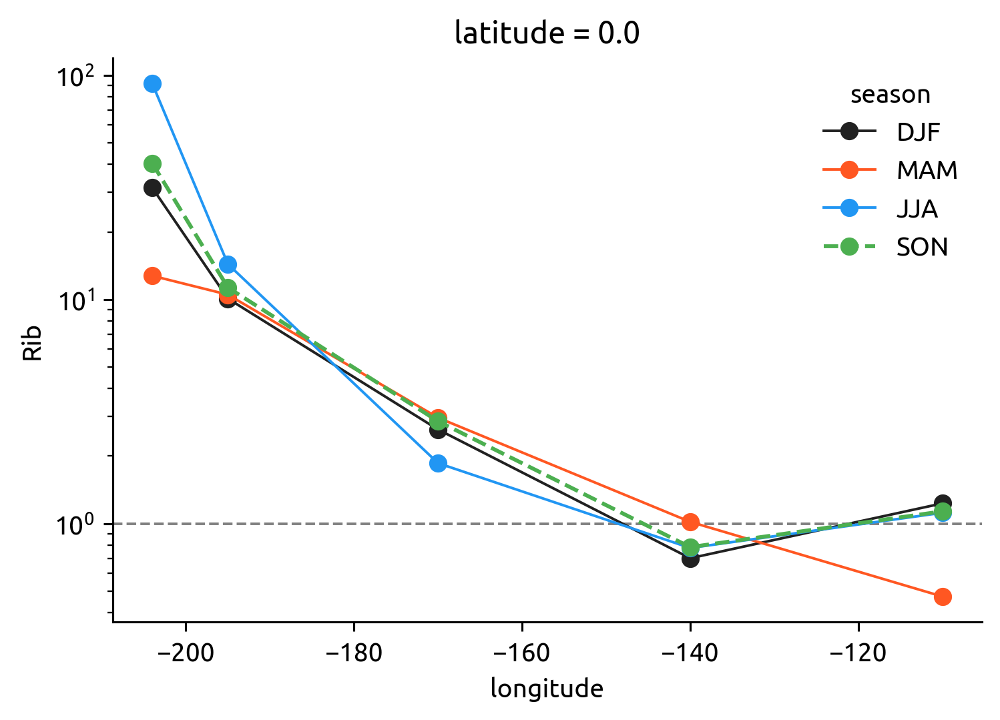
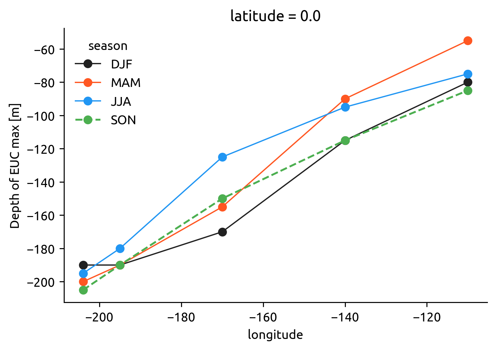
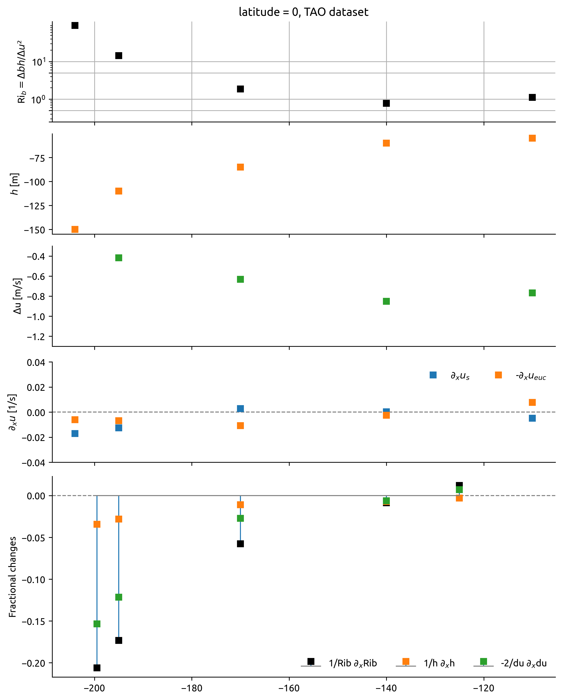
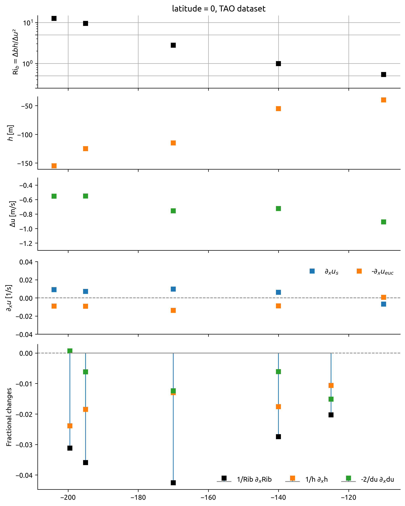
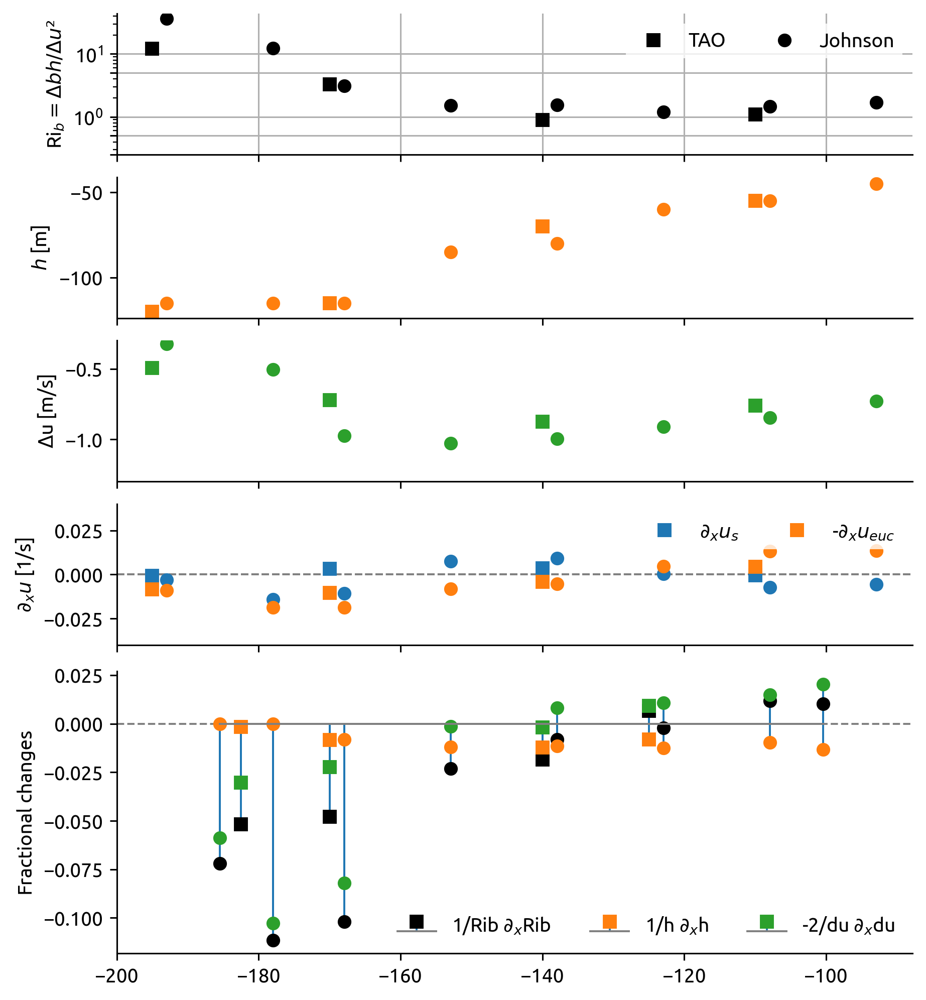
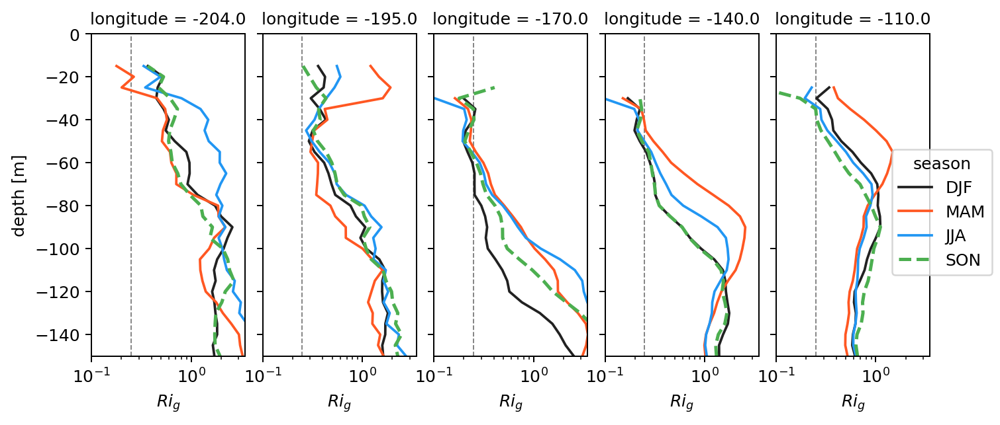
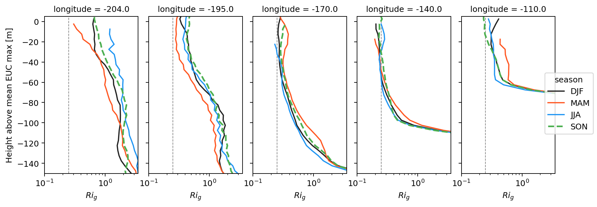
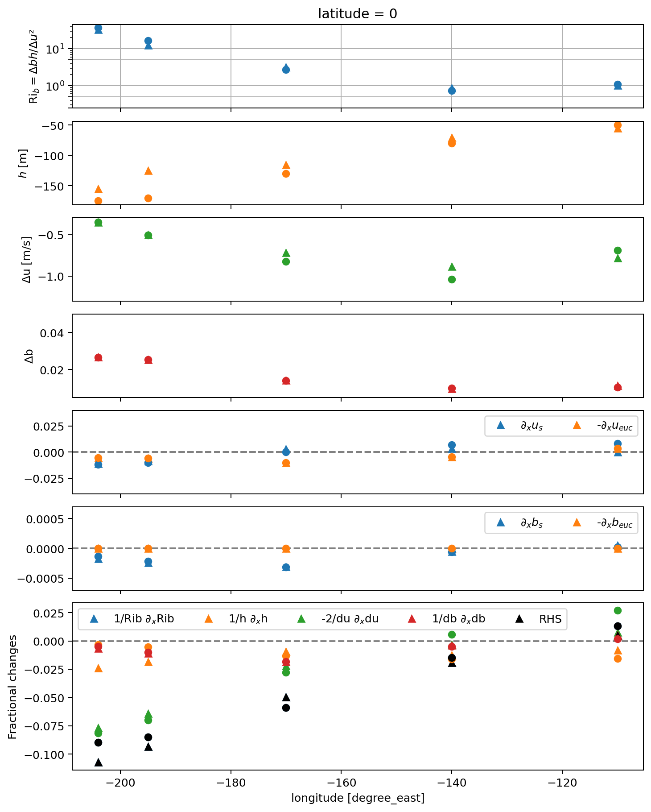
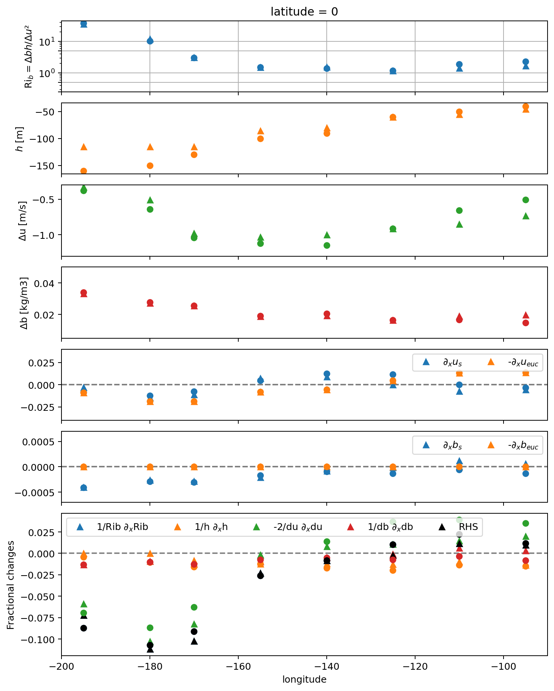

Bulk Ri analysis
Contents
Bulk Ri analysis#
Consolidating code for bulk Ri paper
%load_ext watermark
import dcpy
import matplotlib as mpl
import matplotlib.pyplot as plt
import numpy as np
import xarray as xr
import facetgrid
import pump
mpl.rcParams["savefig.dpi"] = 300
mpl.rcParams["savefig.bbox"] = "tight"
mpl.rcParams["figure.dpi"] = 140
xr.set_options(keep_attrs=True)
%watermark -iv
pump : 0.1
xarray : 0.17.1.dev3+g48378c4b1
matplotlib: 3.3.4
dcpy : 0.1
numpy : 1.20.1
import dask
import distributed
import ncar_jobqueue
cluster = ncar_jobqueue.NCARCluster(project="ncgd0011")
cluster.scale(4)
client = distributed.Client(cluster)
client
/home/deepak/miniconda3/envs/dcpy/lib/python3.8/site-packages/ncar_jobqueue/cluster.py:29: UserWarning: Unable to determine which NCAR cluster you are running on...Using a local cluster via `distributed.LocalCluster`.
warn(
Client
|
Cluster
|
Read datasets#
mimoc = dcpy.oceans.read_mimoc("/home/deepak/datasets/mimoc/")
mimoc["longitude"] = mimoc.longitude - 360
mimocmld = (
mimoc.DEPTH_MIXED_LAYER.coarsen(longitude=5, boundary="pad")
.mean()
.sel(longitude=slice(-220, -80))
.sel(latitude=0, method="nearest")
.max("time")
)
mimocmld.plot()
/home/deepak/miniconda3/envs/dcpy/lib/python3.8/site-packages/dask/array/numpy_compat.py:40: RuntimeWarning: invalid value encountered in true_divide
x = np.divide(x1, x2, out)
[<matplotlib.lines.Line2D at 0x7f9ffe6faa60>]
johnson = pump.obs.read_johnson("~/datasets/johnson.cdf").sel(latitude=0)
johnson["eucmax"] = pump.get_euc_max(johnson.u)
johnson = pump.calc.estimate_euc_depth_terms(johnson)
johnson.attrs["name"] = "Johnson"
johnson["mld"] = mimocmld.interp(longitude=johnson.longitude.values).load()
johnson.load()
/home/deepak/miniconda3/envs/dcpy/lib/python3.8/site-packages/dask/array/numpy_compat.py:40: RuntimeWarning: invalid value encountered in true_divide
x = np.divide(x1, x2, out)
<xarray.Dataset>
Dimensions: (depth: 50, lon_edges: 11, longitude: 10)
Coordinates:
* longitude (longitude) float64 -217.0 -204.0 -195.0 ... -125.0 -110.0 -95.0
* lon_edges (lon_edges) float64 136.5 149.5 160.5 172.5 ... 242.5 257.5 272.5
latitude float64 0.0
* depth (depth) float64 -5.0 -15.0 -25.0 -35.0 ... -475.0 -485.0 -495.0
Data variables: (12/18)
temp (depth, longitude) float32 29.32 29.32 28.99 ... 8.132 8.024
salt (depth, longitude) float32 34.19 34.45 34.77 ... 34.63 34.63
dens (depth, longitude) float32 1.021e+03 1.022e+03 ... 1.027e+03
u (depth, longitude) float32 0.08696 0.1127 0.01524 ... nan nan nan
TSPTS (depth, longitude) float32 20.0 34.0 28.0 46.0 ... 47.0 38.0 24.0
UPTS (depth, longitude) float32 20.0 34.0 27.0 45.0 ... nan 2.362 nan
... ...
b (depth, longitude) float32 -9.766 -9.774 -9.776 ... -9.822 -9.822
bs (longitude) float32 -9.767 -9.778 -9.777 ... -9.794 -9.791 -9.79
beuc (longitude) float32 -9.81 -9.81 -9.81 -9.81 ... -9.81 -9.81 -9.81
db (longitude) float32 0.04333 0.03237 0.03319 ... 0.01902 0.01996
Rib (longitude) float64 56.18 20.04 36.27 12.32 ... 1.185 1.453 1.692
mld (longitude) float64 29.57 45.73 38.86 37.31 ... 25.44 17.44 17.51
Attributes:
history: FERRET V5.41 1-Oct-02
name: Johnsonxarray.Dataset
- depth: 50
- lon_edges: 11
- longitude: 10
- longitude(longitude)float64-217.0 -204.0 ... -110.0 -95.0
array([-217., -204., -195., -180., -170., -155., -140., -125., -110., -95.])
- lon_edges(lon_edges)float64136.5 149.5 160.5 ... 257.5 272.5
- edges :
array([136.5, 149.5, 160.5, 172.5, 185. , 197.5, 212.5, 227.5, 242.5, 257.5, 272.5]) - latitude()float640.0
- units :
- degrees_north
- point_spacing :
- even
array(0.)
- depth(depth)float64-5.0 -15.0 -25.0 ... -485.0 -495.0
- units :
- m
- positive :
- down
- point_spacing :
- even
array([ -5., -15., -25., -35., -45., -55., -65., -75., -85., -95., -105., -115., -125., -135., -145., -155., -165., -175., -185., -195., -205., -215., -225., -235., -245., -255., -265., -275., -285., -295., -305., -315., -325., -335., -345., -355., -365., -375., -385., -395., -405., -415., -425., -435., -445., -455., -465., -475., -485., -495.])
- temp(depth, longitude)float3229.32 29.32 28.99 ... 8.132 8.024
- long_name :
- Potential Temperature (If > 16 obs)
- history :
- From meanfit2
- units :
- Degrees C
array([[29.32408 , 29.32196 , 28.98892 , 27.90945 , 27.43092 , 26.43207 , 25.66783 , 24.77945 , 23.91235 , 24.17392 ], [29.32408 , 29.32196 , 28.98892 , 27.90945 , 27.43092 , 26.43207 , 25.39479 , 24.34854 , 23.30844 , 22.8154 ], [29.29031 , 29.10626 , 28.98892 , 27.90945 , 27.43092 , 26.32236 , 25.08089 , 23.83151 , 22.59741 , 21.35751 ], [29.22716 , 28.85828 , 29.0114 , 27.90945 , 27.40585 , 26.19342 , 24.70398 , 23.20563 , 21.73312 , 19.89951 ], [29.11751 , 28.58234 , 29.05516 , 27.87341 , 27.31975 , 26.02008 , 24.24197 , 22.44806 , 20.66937 , 18.54071 ], [28.94427 , 28.2827 , 29.0847 , 27.76042 , 27.1562 , 25.77721 , 23.67273 , 21.53607 , 19.36005 , 17.27875 ], [28.69038 , 27.96368 , 29.06453 , 27.56325 , 26.89882 , 25.43964 , 22.97412 , 20.47206 , 17.89484 , 16.1673 ], [28.33871 , 27.62956 , 28.95915 , 27.27461 , 26.5312 , 24.98222 , 22.12405 , 19.28279 , 16.3996 , 15.52618 ], [27.24928 , 27.28465 , 28.73305 , 26.88725 , 26.03697 , 24.37979 , 21.1004 , 18.04407 , 15.63684 , 15.06998 ], [25.69624 , 26.93323 , 28.35072 , 26.39389 , 25.39972 , 23.60722 , 19.84656 , 16.81937 , 15.05563 , 14.80109 ], ... [ 9.57663 , 9.334534, 9.592117, 9.520996, 9.327911, 9.41275 , 9.4944 , 9.24881 , 9.396362, 9.327209], [ 9.408295, 9.236465, 9.4104 , 9.322113, 9.146378, 9.251678, 9.306137, 9.105072, 9.218933, 9.13736 ], [ 9.237915, 9.127319, 9.243271, 9.092224, 8.990463, 9.085892, 9.121628, 8.981293, 9.049103, 8.939606], [ 9.012558, 9.014236, 9.053009, 8.903809, 8.833206, 8.919189, 8.962875, 8.840866, 8.874451, 8.749969], [ 8.838165, 8.924759, 8.859741, 8.731323, 8.693237, 8.758499, 8.798279, 8.694916, 8.725861, 8.613098], [ 8.676407, 8.853699, 8.699463, 8.602127, 8.559341, 8.582352, 8.635315, 8.54184 , 8.593994, 8.476929], [ 8.531479, 8.777344, 8.537933, 8.480743, 8.441788, 8.45578 , 8.476379, 8.423401, 8.469025, 8.343597], [ 8.403397, 8.678635, 8.399918, 8.340393, 8.319824, 8.313049, 8.313309, 8.319244, 8.350708, 8.234406], [ 8.264923, 8.54155 , 8.266632, 8.211258, 8.189224, 8.205643, 8.163498, 8.215576, 8.241669, 8.132355], [ 8.149963, 8.364044, 8.138885, 8.082443, 8.085785, 8.113434, 8.038971, 8.120865, 8.131653, 8.023529]], dtype=float32) - salt(depth, longitude)float3234.19 34.45 34.77 ... 34.63 34.63
- long_name :
- Salinity (If > 16 obs)
- history :
- From meanfit2
array([[34.19115, 34.45227, 34.77197, 35.10362, 35.20035, 35.08017, 34.91434, 34.88116, 34.77487, 34.42538], [34.19115, 34.45227, 34.77197, 35.10362, 35.20035, 35.08017, 34.93756, 34.91861, 34.81915, 34.5513 ], [34.23563, 34.51073, 34.77197, 35.10362, 35.20035, 35.08202, 34.96658, 34.96786, 34.87271, 34.7316 ], [34.29428, 34.58981, 34.78226, 35.10362, 35.20233, 35.08423, 34.99948, 35.02048, 34.92984, 34.89874], [34.37 , 34.68227, 34.81055, 35.10739, 35.20792, 35.08775, 35.03435, 35.06799, 34.98483, 34.98526], [34.46564, 34.78075, 34.853 , 35.11786, 35.21649, 35.09349, 35.06926, 35.1019 , 35.03195, 35.00824], [34.58414, 34.87796, 34.90575, 35.13374, 35.22749, 35.1024 , 35.10231, 35.12231, 35.06473, 35.03207], [34.72836, 34.96657, 34.96497, 35.15375, 35.24034, 35.11539, 35.13158, 35.134 , 35.05405, 35.03503], [34.9373 , 35.03931, 35.02682, 35.17657, 35.25444, 35.13339, 35.15517, 35.15167, 35.03003, 35.00998], [35.07974, 35.08884, 35.08745, 35.20097, 35.26921, 35.15736, 35.16934, 35.1373 , 35.00513, 34.99847], ... [34.69536, 34.68063, 34.70045, 34.6946 , 34.68877, 34.69434, 34.70271, 34.69095, 34.69937, 34.70074], [34.68439, 34.67447, 34.68884, 34.68219, 34.67804, 34.68527, 34.69257, 34.68298, 34.68958, 34.69043], [34.67361, 34.66776, 34.67722, 34.66872, 34.66901, 34.67603, 34.68259, 34.67609, 34.68048, 34.67987], [34.65982, 34.66003, 34.6644 , 34.65845, 34.66011, 34.66681, 34.67422, 34.66867, 34.67117, 34.6702 ], [34.65039, 34.65517, 34.65262, 34.64856, 34.65201, 34.65866, 34.6658 , 34.66125, 34.66354, 34.66321], [34.64139, 34.6515 , 34.64371, 34.64093, 34.64473, 34.65001, 34.65744, 34.65366, 34.65683, 34.6564 ], [34.6333 , 34.64731, 34.63506, 34.63457, 34.63876, 34.64362, 34.64928, 34.64774, 34.65039, 34.64966], [34.62619, 34.64192, 34.62735, 34.6275 , 34.63257, 34.63666, 34.64122, 34.64227, 34.64423, 34.64404], [34.61801, 34.63422, 34.61969, 34.62085, 34.62584, 34.63124, 34.63382, 34.63693, 34.6387 , 34.63898], [34.61145, 34.62399, 34.6123 , 34.61426, 34.62076, 34.62677, 34.62744, 34.63205, 34.63336, 34.63364]], dtype=float32) - dens(depth, longitude)float321.021e+03 1.022e+03 ... 1.027e+03
- long_name :
- Potential Density (If > 16 obs)
- history :
- From meanfit2
- units :
- kg/m3
array([[1021.3508 , 1021.5474 , 1021.8989 , 1022.50433, 1022.73236, 1022.9604 , 1023.0737 , 1023.32007, 1023.49854, 1023.1566 ], [1021.3508 , 1021.5474 , 1021.8989 , 1022.50433, 1022.73236, 1022.9604 , 1023.1753 , 1023.4778 , 1023.70886, 1023.6479 ], [1021.39557, 1021.6636 , 1021.8989 , 1022.50433, 1022.73236, 1022.9963 , 1023.2932 , 1023.6685 , 1023.9539 , 1024.1934 ], [1021.4607 , 1021.80566, 1021.8991 , 1022.50433, 1022.74194, 1023.0384 , 1023.43225, 1023.8913 , 1024.2405 , 1024.7122 ], [1021.5542 , 1021.9666 , 1021.9057 , 1022.5189 , 1022.7739 , 1023.0952 , 1023.59717, 1024.1447 , 1024.5731 , 1025.1273 ], [1021.68384, 1022.13934, 1021.9277 , 1022.5636 , 1022.83295, 1023.17505, 1023.792 , 1024.4259 , 1024.9543 , 1025.455 ], [1021.8571 , 1022.3169 , 1021.97406, 1022.63947, 1022.92346, 1023.286 , 1024.0203 , 1024.7308 , 1025.3485 , 1025.7347 ], [1022.0816 , 1022.4922 , 1022.0537 , 1022.7476 , 1023.04987, 1023.43567, 1024.2844 , 1025.0522 , 1025.6979 , 1025.8828 ], [1022.5928 , 1022.65826, 1022.1755 , 1022.8888 , 1023.2157 , 1023.631 , 1024.586 , 1025.3784 , 1025.8541 , 1025.9651 ], [1023.18976, 1022.80804, 1022.34753, 1023.0635 , 1023.4243 , 1023.878 , 1024.9326 , 1025.6635 , 1025.9645 , 1026.0151 ], ... 1026.8121 , 1026.8052 , 1026.8363 , 1026.8187 , 1026.8312 ], [1026.805 , 1026.8254 , 1026.8082 , 1026.8175 , 1026.8428 , 1026.8314 , 1026.8282 , 1026.8533 , 1026.8401 , 1026.854 ], [1026.8245 , 1026.8379 , 1026.8264 , 1026.8442 , 1026.8608 , 1026.851 , 1026.8503 , 1026.8679 , 1026.8604 , 1026.8774 ], [1026.8501 , 1026.85 , 1026.8472 , 1026.8663 , 1026.8789 , 1026.8705 , 1026.8693 , 1026.8844 , 1026.881 , 1026.8999 ], [1026.8705 , 1026.8605 , 1026.8688 , 1026.886 , 1026.8947 , 1026.8895 , 1026.8889 , 1026.9016 , 1026.8986 , 1026.9159 ], [1026.8889 , 1026.8689 , 1026.8871 , 1026.9001 , 1026.9098 , 1026.9104 , 1026.908 , 1026.9196 , 1026.914 , 1026.9318 ], [1026.9052 , 1026.8777 , 1026.9055 , 1026.9141 , 1026.9233 , 1026.925 , 1026.9263 , 1026.9332 , 1026.9282 , 1026.947 ], [1026.9194 , 1026.889 , 1026.9209 , 1026.93 , 1026.9371 , 1026.9414 , 1026.945 , 1026.945 , 1026.9417 , 1026.9592 ], [1026.9342 , 1026.9043 , 1026.9352 , 1026.9446 , 1026.9518 , 1026.9535 , 1026.9619 , 1026.9565 , 1026.954 , 1026.9707 ], [1026.9464 , 1026.9237 , 1026.9487 , 1026.9589 , 1026.9634 , 1026.964 , 1026.9757 , 1026.967 , 1026.9664 , 1026.9829 ]], dtype=float32) - u(depth, longitude)float320.08696 0.1127 0.01524 ... nan nan
- long_name :
- U component of velocity
- history :
- From meanfit2
- units :
- m/s
array([[ 8.695984e-02, 1.127472e-01, 1.524353e-02, -1.189270e-01, -3.015137e-01, -3.043213e-01, -3.773346e-01, -1.208038e-01, -8.332825e-02, -1.861877e-01], [ 8.341980e-02, 1.353455e-01, 3.355408e-02, -1.002655e-01, -2.718811e-01, -2.579498e-01, -2.339020e-01, 3.550720e-02, 6.764221e-02, -1.617432e-02], [ 4.620361e-02, 1.165466e-01, 4.588318e-02, -7.801819e-02, -2.297363e-01, -1.702881e-01, -8.813477e-02, 1.996918e-01, 2.585754e-01, 2.067261e-01], [-1.550293e-02, 7.502747e-02, 5.908203e-02, -3.242493e-02, -1.621857e-01, -7.597351e-02, 5.973816e-02, 3.710785e-01, 4.628906e-01, 4.254761e-01], [-8.711243e-02, 1.896667e-02, 7.255554e-02, 1.246643e-02, -8.317566e-02, 2.496338e-02, 2.094879e-01, 5.490570e-01, 6.539917e-01, 5.830994e-01], [-1.540375e-01, -4.347229e-02, 8.641052e-02, 5.673218e-02, 5.538940e-03, 1.325378e-01, 3.608398e-01, 7.329712e-01, 8.052826e-01, 6.708374e-01], [-2.016754e-01, -1.040955e-01, 1.007233e-01, 1.006012e-01, 1.021271e-01, 2.467041e-01, 5.135651e-01, 9.245758e-01, ... nan, -5.599976e-03, -2.841187e-02, 4.179382e-02, -9.516907e-02, nan], [ nan, nan, nan, nan, nan, nan, -4.182434e-02, nan, nan, nan], [ nan, nan, nan, nan, nan, nan, nan, nan, nan, nan], [ nan, nan, nan, nan, nan, nan, nan, nan, nan, nan], [ nan, nan, nan, nan, nan, nan, nan, nan, nan, nan], [ nan, nan, nan, nan, nan, nan, nan, nan, nan, nan], [ nan, nan, nan, nan, nan, nan, nan, nan, nan, nan]], dtype=float32) - TSPTS(depth, longitude)float3220.0 34.0 28.0 ... 47.0 38.0 24.0
- long_name :
- Number of CTD data pts used for T and S
- history :
- From meanfit2
- units :
- no unit
array([[ 20., 34., 28., 46., 50., 57., 53., 47., 38., 24.], [ 20., 34., 28., 46., 50., 57., -53., -47., -38., -24.], [-20., -34., 28., 46., 50., -57., -53., -47., -38., -24.], [-20., -34., -28., 46., -50., -57., -53., -47., -38., -24.], [-20., -34., -28., -46., -50., -57., -53., -47., -38., 24.], [-20., -34., -28., -46., -50., -57., -53., 47., 38., 24.], [-20., -34., -28., -46., -50., -57., -53., 47., 38., 24.], [ 20., -34., -28., -46., -50., -57., -53., 47., 38., 24.], [ 20., -34., -28., -46., -50., -57., 53., 47., 38., 24.], [ 20., 34., -28., -46., -50., 57., 53., 47., 38., 24.], [ 20., 34., -28., -46., 50., 57., 53., 47., 38., 24.], [ 20., 34., -28., 46., 50., 57., 53., 47., 38., 24.], [ 20., 34., 28., 46., 50., 57., 53., 47., 38., 24.], [ 20., 34., 28., 46., 50., 57., 53., 47., 38., 24.], [ 20., 34., 28., 46., 50., 57., 53., 47., 38., 24.], [ 20., 34., 28., 46., 50., 57., 53., 47., 38., 24.], [ 20., 34., 28., 46., 50., 57., 53., 47., 38., 24.], [ 20., 34., 28., 46., 50., 57., 53., 47., 38., 24.], [ 20., 34., 28., 46., 50., 57., 53., 47., 38., 24.], [ 20., 34., 28., 46., 50., 57., 53., 47., 38., 24.], ... [ 20., 34., 28., 46., 50., 57., 53., 47., 38., 24.], [ 20., 34., 28., 46., 50., 57., 53., 47., 38., 24.], [ 20., 34., 28., 46., 50., 57., 53., 47., 38., 24.], [ 20., 34., 28., 46., 50., 57., 53., 47., 38., 24.], [ 20., 34., 28., 46., 50., 57., 53., 47., 38., 24.], [ 20., 34., 28., 46., 50., 57., 53., 47., 38., 24.], [ 20., 34., 28., 46., 50., 57., 53., 47., 38., 24.], [ 20., 34., 28., 46., 50., 57., 53., 47., 38., 24.], [ 20., 34., 28., 46., 50., 57., 53., 47., 38., 24.], [ 20., 34., 28., 46., 50., 57., 53., 47., 38., 24.], [ 20., 34., 28., 46., 50., 57., 53., 47., 38., 24.], [ 20., 34., 28., 46., 50., 57., 53., 47., 38., 24.], [ 20., 34., 28., 46., 50., 57., 53., 47., 38., 24.], [ 20., 34., 28., 46., 50., 57., 53., 47., 38., 24.], [ 20., 34., 28., 46., 50., 57., 53., 47., 38., 24.], [ 20., 34., 28., 46., 50., 57., 53., 47., 38., 24.], [ 20., 34., 28., 46., 50., 57., 53., 47., 38., 24.], [ 20., 34., 28., 46., 50., 57., 53., 47., 38., 24.], [ 20., 34., 28., 46., 50., 57., 53., 47., 38., 24.]], dtype=float32) - UPTS(depth, longitude)float3220.0 34.0 27.0 ... nan 2.362 nan
- long_name :
- Number of ADCP data pts used for U
- history :
- From meanfit2
- units :
- no unit
array([[ 20. , 34. , 27. , 45. , 49. , 57. , 53. , 47. , 38. , 24. ], [ 20. , 34. , 27. , 45. , 49. , 57. , -53. , -47. , -38. , -24. ], [-20. , -34. , 27. , 45. , 49. , -57. , -53. , -47. , -38. , -24. ], [-20. , -34. , -27. , 45. , -49. , -57. , -53. , -47. , -38. , -24. ], [-20. , -34. , -27. , -45. , -49. , -57. , -53. , -47. , -38. , 24. ], [-20. , -34. , -27. , -45. , -49. , -57. , -53. , 47. , 38. , 24. ], [-20. , -34. , -27. , -45. , -49. , -57. , -53. , 47. , 38. , 24. ], [ 20. , -34. , -27. , -45. , -49. , -57. , -53. , 47. , 38. , 24. ], [ 20. , -34. , -27. , -45. , -49. , -57. , 53. , 47. , 38. , 24. ], [ 20. , 34. , -27. , -45. , -49. , 57. , 53. , 47. , 38. , 24. ], ... 29.79913 , 33.49008 , 29.51288 , 30.13312 , 18. ], [ 2.510162, 6.471069, 12.18974 , 20.26578 , 20.72708 , 27.6134 , 30.38028 , 23.01508 , 26.99951 , 16.61554 ], [ 1.56459 , 4.448212, 11. , 16.58417 , 18. , 21.64183 , 22.91777 , 18.66138 , 23.86865 , 11.52292 ], [ 1. , 4. , 9. , 15. , 15.35428 , 17.87775 , 19.07364 , 16.13197 , 17.61755 , 8. ], [ 1. , 4. , 9. , 11.24826 , 11.63588 , 14.0504 , 16.11916 , 14.53514 , 14. , 8. ], [ 1. , 4. , 6.587708, 9.979492, 9.022217, 9.942642, 10.64244 , 10.10248 , 11.61432 , 5.658813], [ 1. , 4. , 4.903351, 7.603943, 6.341446, 7.509903, 6.384354, 6.727173, 8.532501, 3.305084], [ 1. , 3.104813, 2.922562, 4.993423, 4.285583, 4.861572, 3.509277, 3.513107, 4.681305, 3. ], [ 1. , 2.571671, 1.485153, 2.552307, 2.825714, 3.300873, 1. , 1.706116, 3. , 1.931 ], [ nan, 2. , 1. , 1.124817, 1.663269, 1.606293, nan, nan, 2.362488, nan]], dtype=float32) - eucmax(longitude)float64-215.0 -185.0 ... -75.0 -65.0
- units :
- m
- positive :
- down
- point_spacing :
- even
- long_name :
- Depth of EUC max
array([-215., -185., -185., -175., -155., -125., -115., -85., -75., -65.]) - h(longitude)float64-185.0 -140.0 ... -55.0 -45.0
- units :
- m
- positive :
- down
- point_spacing :
- even
- long_name :
- $h$
array([-185., -140., -115., -115., -115., -85., -80., -60., -55., -45.]) - us(longitude)float320.0462 0.01897 ... 0.06764 -0.01617
- long_name :
- U component of velocity
- history :
- From meanfit2
- units :
- m/s
array([ 0.04620361, 0.01896667, 0.1007233 , 0.05673218, -0.1621857 , -0.07597351, 0.05973816, 0.1996918 , 0.06764221, -0.01617432], dtype=float32) - ueuc(longitude)float320.424 0.4945 ... 0.9162 0.7123
- long_name :
- U component of velocity
- history :
- From meanfit2
- units :
- m/s
array([0.4239502, 0.4944916, 0.4251556, 0.5608826, 0.8122864, 0.9527435, 1.056854 , 1.109756 , 0.9161682, 0.7123413], dtype=float32) - du(longitude)float32-0.3777 -0.4755 ... -0.8485 -0.7285
- long_name :
- $\Delta$u
- history :
- From meanfit2
- units :
- m/s
array([-0.37774658, -0.47552493, -0.3244323 , -0.50415045, -0.97447205, -1.028717 , -0.99711585, -0.9100642 , -0.848526 , -0.7285156 ], dtype=float32) - dens_euc(longitude)float321.026e+03 1.025e+03 ... 1.026e+03
- long_name :
- Potential Density (If > 16 obs)
- history :
- From meanfit2
- units :
- kg/m3
array([1025.927 , 1025.3501, 1025.4438, 1025.4106, 1025.4175, 1025.0009, 1025.4504, 1025.3784, 1025.6979, 1025.7347], dtype=float32) - b(depth, longitude)float32-9.766 -9.774 ... -9.822 -9.822
- long_name :
- Potential Density (If > 16 obs)
- history :
- From meanfit2
- units :
- kg/m3
array([[-9.766243 , -9.773619 , -9.776088 , -9.782196 , -9.784312 , -9.790472 , -9.787263 , -9.790308 , -9.788966 , -9.785344 ], [-9.766243 , -9.773619 , -9.776088 , -9.782196 , -9.784312 , -9.790472 , -9.788235 , -9.791817 , -9.790977 , -9.790042 ], [-9.76667 , -9.77473 , -9.776088 , -9.782196 , -9.784312 , -9.790815 , -9.789363 , -9.793641 , -9.793321 , -9.7952585], [-9.767294 , -9.77609 , -9.77609 , -9.782196 , -9.784404 , -9.791218 , -9.790693 , -9.795773 , -9.7960615, -9.8002205], [-9.7681875, -9.777629 , -9.776153 , -9.782335 , -9.78471 , -9.791762 , -9.792271 , -9.798197 , -9.799243 , -9.804191 ], [-9.769426 , -9.779282 , -9.776363 , -9.7827635, -9.7852745, -9.792526 , -9.794134 , -9.800887 , -9.802889 , -9.807325 ], [-9.771084 , -9.78098 , -9.776807 , -9.783489 , -9.78614 , -9.793589 , -9.796319 , -9.803805 , -9.806659 , -9.81 ], [-9.773231 , -9.782657 , -9.777569 , -9.784523 , -9.78735 , -9.79502 , -9.798845 , -9.80688 , -9.81 , -9.811417 ], [-9.778118 , -9.784246 , -9.778733 , -9.785873 , -9.788936 , -9.796889 , -9.801731 , -9.81 , -9.811495 , -9.812203 ], [-9.783827 , -9.785679 , -9.780379 , -9.787545 , -9.790932 , -9.799253 , -9.805047 , -9.812727 , -9.812551 , -9.812682 ], ... -9.827335 , -9.82296 , -9.823948 , -9.82072 , -9.820486 ], [-9.818397 , -9.824116 , -9.823053 , -9.82346 , -9.823636 , -9.82752 , -9.823181 , -9.82411 , -9.820925 , -9.820705 ], [-9.818582 , -9.824235 , -9.823227 , -9.823716 , -9.823809 , -9.827707 , -9.823393 , -9.824251 , -9.821118 , -9.820929 ], [-9.818827 , -9.82435 , -9.823425 , -9.823927 , -9.823981 , -9.827894 , -9.823574 , -9.824409 , -9.821316 , -9.821144 ], [-9.819022 , -9.824451 , -9.823632 , -9.824115 , -9.824132 , -9.828076 , -9.823761 , -9.8245735, -9.821484 , -9.821297 ], [-9.819198 , -9.824532 , -9.823808 , -9.82425 , -9.824277 , -9.828276 , -9.823944 , -9.824744 , -9.821631 , -9.821448 ], [-9.819354 , -9.8246155, -9.823983 , -9.824384 , -9.824407 , -9.828416 , -9.82412 , -9.824876 , -9.821768 , -9.821594 ], [-9.81949 , -9.824724 , -9.824131 , -9.824536 , -9.824539 , -9.828573 , -9.824297 , -9.824987 , -9.821896 , -9.821712 ], [-9.819631 , -9.82487 , -9.824267 , -9.824676 , -9.824678 , -9.828689 , -9.82446 , -9.825099 , -9.822014 , -9.821821 ], [-9.819748 , -9.825056 , -9.824397 , -9.824812 , -9.824789 , -9.82879 , -9.824592 , -9.825199 , -9.822133 , -9.8219385]], dtype=float32) - bs(longitude)float32-9.767 -9.778 ... -9.791 -9.79
- long_name :
- Potential Density (If > 16 obs)
- history :
- From meanfit2
- units :
- kg/m3
array([-9.76667 , -9.777629 , -9.776807 , -9.7827635, -9.784404 , -9.791218 , -9.790693 , -9.793641 , -9.790977 , -9.790042 ], dtype=float32) - beuc(longitude)float32-9.81 -9.81 -9.81 ... -9.81 -9.81
- long_name :
- Potential Density (If > 16 obs)
- history :
- From meanfit2
- units :
- kg/m3
array([-9.81, -9.81, -9.81, -9.81, -9.81, -9.81, -9.81, -9.81, -9.81, -9.81], dtype=float32) - db(longitude)float320.04333 0.03237 ... 0.01902 0.01996
- long_name :
- $\Delta$b
- history :
- From meanfit2
- units :
- kg/m3
array([0.04333019, 0.03237152, 0.03319359, 0.02723694, 0.02559662, 0.01878262, 0.01930714, 0.01635933, 0.0190239 , 0.0199585 ], dtype=float32) - Rib(longitude)float6456.18 20.04 36.27 ... 1.453 1.692
array([56.17735301, 20.04216167, 36.26634879, 12.32354946, 3.09985712, 1.50863132, 1.55351912, 1.18514817, 1.4532215 , 1.69224245]) - mld(longitude)float6429.57 45.73 38.86 ... 17.44 17.51
array([29.5677402 , 45.73303223, 38.85804451, 37.31137085, 40.12059937, 42.27306673, 32.97831726, 25.44118728, 17.43945238, 17.50887489])
- history :
- FERRET V5.41 1-Oct-02
- name :
- Johnson
tao = pump.obs.read_tao_zarr("ancillary").rename({"Ri": "Rig"})
tao
<xarray.Dataset>
Dimensions: (depth: 61, longitude: 5, time: 287335)
Coordinates:
deepest (time, longitude) float64 dask.array<chunksize=(100000, 1), meta=np.ndarray>
* depth (depth) float64 -300.0 -295.0 -290.0 ... -10.0 -5.0 0.0
eucmax (time, longitude) float64 dask.array<chunksize=(287335, 4), meta=np.ndarray>
latitude float32 ...
* longitude (longitude) float64 -204.0 -195.0 -170.0 -140.0 -110.0
mld (time, longitude) float64 dask.array<chunksize=(100000, 1), meta=np.ndarray>
reference_pressure int64 ...
shallowest (time, longitude) float64 dask.array<chunksize=(100000, 1), meta=np.ndarray>
* time (time) datetime64[ns] 1988-05-15T18:00:00 ... 2021-02-24
zeuc (depth, time, longitude) float64 dask.array<chunksize=(61, 287335, 4), meta=np.ndarray>
Data variables:
N2 (time, longitude, depth) float64 dask.array<chunksize=(100000, 1, 61), meta=np.ndarray>
N2T (time, longitude, depth) float64 dask.array<chunksize=(100000, 1, 61), meta=np.ndarray>
Rig (time, longitude, depth) float64 dask.array<chunksize=(100000, 1, 61), meta=np.ndarray>
Rig_T (time, longitude, depth) float64 dask.array<chunksize=(100000, 1, 61), meta=np.ndarray>
S (time, longitude, depth) float64 dask.array<chunksize=(100000, 1, 61), meta=np.ndarray>
S2 (time, depth, longitude) float32 dask.array<chunksize=(100000, 61, 1), meta=np.ndarray>
T (time, longitude, depth) float64 dask.array<chunksize=(100000, 1, 61), meta=np.ndarray>
dens (time, longitude, depth) float64 dask.array<chunksize=(100000, 1, 61), meta=np.ndarray>
densT (time, longitude, depth) float64 dask.array<chunksize=(100000, 1, 61), meta=np.ndarray>
u (time, depth, longitude) float32 dask.array<chunksize=(100000, 61, 1), meta=np.ndarray>
v (time, depth, longitude) float32 dask.array<chunksize=(100000, 61, 1), meta=np.ndarray>xarray.Dataset
- depth: 61
- longitude: 5
- time: 287335
- deepest(time, longitude)float64dask.array<chunksize=(100000, 1), meta=np.ndarray>
- description :
- Deepest depth with a valid observation
- units :
- m
Array Chunk Bytes 11.49 MB 800.00 kB Shape (287335, 5) (100000, 1) Count 16 Tasks 15 Chunks Type float64 numpy.ndarray - depth(depth)float64-300.0 -295.0 -290.0 ... -5.0 0.0
- axis :
- Z
- positive :
- up
- units :
- m
array([-300., -295., -290., -285., -280., -275., -270., -265., -260., -255., -250., -245., -240., -235., -230., -225., -220., -215., -210., -205., -200., -195., -190., -185., -180., -175., -170., -165., -160., -155., -150., -145., -140., -135., -130., -125., -120., -115., -110., -105., -100., -95., -90., -85., -80., -75., -70., -65., -60., -55., -50., -45., -40., -35., -30., -25., -20., -15., -10., -5., 0.]) - eucmax(time, longitude)float64dask.array<chunksize=(287335, 4), meta=np.ndarray>
- long_name :
- $z_{EUC}$
- units :
- m
Array Chunk Bytes 11.49 MB 9.19 MB Shape (287335, 5) (287335, 4) Count 3 Tasks 2 Chunks Type float64 numpy.ndarray - latitude()float32...
- FORTRAN_format :
- epic_code :
- 500
- type :
- EVEN
- units :
- degree_north
array(0., dtype=float32)
- longitude(longitude)float64-204.0 -195.0 -170.0 -140.0 -110.0
array([-204., -195., -170., -140., -110.])
- mld(time, longitude)float64dask.array<chunksize=(100000, 1), meta=np.ndarray>
- description :
- Interpolate density to 1m grid. Search for max depth where |drho| > 0.01 and N2 > 1e-5
- long_name :
- $z_{MLD}$
- units :
- m
Array Chunk Bytes 11.49 MB 800.00 kB Shape (287335, 5) (100000, 1) Count 16 Tasks 15 Chunks Type float64 numpy.ndarray - reference_pressure()int64...
- units :
- dbar
array(0)
- shallowest(time, longitude)float64dask.array<chunksize=(100000, 1), meta=np.ndarray>
- axis :
- Z
- description :
- Shallowest depth with a valid observation
- positive :
- up
- units :
- m
Array Chunk Bytes 11.49 MB 800.00 kB Shape (287335, 5) (100000, 1) Count 16 Tasks 15 Chunks Type float64 numpy.ndarray - time(time)datetime64[ns]1988-05-15T18:00:00 ... 2021-02-24
array(['1988-05-15T18:00:00.000000000', '1988-05-15T19:00:00.000000000', '1988-05-15T20:00:00.000000000', ..., '2021-02-23T22:00:00.000000000', '2021-02-23T23:00:00.000000000', '2021-02-24T00:00:00.000000000'], dtype='datetime64[ns]') - zeuc(depth, time, longitude)float64dask.array<chunksize=(61, 287335, 4), meta=np.ndarray>
Array Chunk Bytes 701.10 MB 560.88 MB Shape (61, 287335, 5) (61, 287335, 4) Count 3 Tasks 2 Chunks Type float64 numpy.ndarray
- N2(time, longitude, depth)float64dask.array<chunksize=(100000, 1, 61), meta=np.ndarray>
- long_name :
- $N²$
Array Chunk Bytes 701.10 MB 48.80 MB Shape (287335, 5, 61) (100000, 1, 61) Count 16 Tasks 15 Chunks Type float64 numpy.ndarray - N2T(time, longitude, depth)float64dask.array<chunksize=(100000, 1, 61), meta=np.ndarray>
- long_name :
- $N_T²$
Array Chunk Bytes 701.10 MB 48.80 MB Shape (287335, 5, 61) (100000, 1, 61) Count 16 Tasks 15 Chunks Type float64 numpy.ndarray - Rig(time, longitude, depth)float64dask.array<chunksize=(100000, 1, 61), meta=np.ndarray>
- long_name :
- $Ri_g$
Array Chunk Bytes 701.10 MB 48.80 MB Shape (287335, 5, 61) (100000, 1, 61) Count 16 Tasks 15 Chunks Type float64 numpy.ndarray - Rig_T(time, longitude, depth)float64dask.array<chunksize=(100000, 1, 61), meta=np.ndarray>
- description :
- Ri_g calculated with N² assuming S=35, masked where N2T < 1e-5
- long_name :
- $Ri_g^T$
Array Chunk Bytes 701.10 MB 48.80 MB Shape (287335, 5, 61) (100000, 1, 61) Count 16 Tasks 15 Chunks Type float64 numpy.ndarray - S(time, longitude, depth)float64dask.array<chunksize=(100000, 1, 61), meta=np.ndarray>
- standard_name :
- sea_water_salinity
Array Chunk Bytes 701.10 MB 48.80 MB Shape (287335, 5, 61) (100000, 1, 61) Count 16 Tasks 15 Chunks Type float64 numpy.ndarray - S2(time, depth, longitude)float32dask.array<chunksize=(100000, 61, 1), meta=np.ndarray>
- long_name :
- $S²$
Array Chunk Bytes 350.55 MB 24.40 MB Shape (287335, 61, 5) (100000, 61, 1) Count 16 Tasks 15 Chunks Type float32 numpy.ndarray - T(time, longitude, depth)float64dask.array<chunksize=(100000, 1, 61), meta=np.ndarray>
- standard_name :
- sea_water_potential_temperature
Array Chunk Bytes 701.10 MB 48.80 MB Shape (287335, 5, 61) (100000, 1, 61) Count 16 Tasks 15 Chunks Type float64 numpy.ndarray - dens(time, longitude, depth)float64dask.array<chunksize=(100000, 1, 61), meta=np.ndarray>
- standard_name :
- sea_water_potential_density
- units :
- kg/m3
Array Chunk Bytes 701.10 MB 48.80 MB Shape (287335, 5, 61) (100000, 1, 61) Count 3636 Tasks 15 Chunks Type float64 numpy.ndarray - densT(time, longitude, depth)float64dask.array<chunksize=(100000, 1, 61), meta=np.ndarray>
- standard_name :
- sea_water_potential_density
- units :
- kg/m3
- long_name :
- $ρ_T$
- description :
- density using T, S
Array Chunk Bytes 701.10 MB 48.80 MB Shape (287335, 5, 61) (100000, 1, 61) Count 3545 Tasks 15 Chunks Type float64 numpy.ndarray - u(time, depth, longitude)float32dask.array<chunksize=(100000, 61, 1), meta=np.ndarray>
- FORTRAN_format :
- epic_code :
- 1205
- generic_name :
- u
- long_name :
- u
- name :
- u
- standard_name :
- sea_water_x_velocity
- units :
- m/s
Array Chunk Bytes 350.55 MB 24.40 MB Shape (287335, 61, 5) (100000, 61, 1) Count 16 Tasks 15 Chunks Type float32 numpy.ndarray - v(time, depth, longitude)float32dask.array<chunksize=(100000, 61, 1), meta=np.ndarray>
- FORTRAN_format :
- epic_code :
- 1206
- generic_name :
- v
- long_name :
- v
- name :
- v
- standard_name :
- sea_water_y_velocity
- units :
- m/s
Array Chunk Bytes 350.55 MB 24.40 MB Shape (287335, 61, 5) (100000, 61, 1) Count 16 Tasks 15 Chunks Type float32 numpy.ndarray
median_Rig_z = (
tao[["Rig", "Rig_T"]]
.groupby("time.season")
.apply(lambda x: x.chunk({"time": -1}).quantile(q=0.5, dim="time"))
.reindex(season=["DJF", "MAM", "JJA", "SON"])
)
median_Rig_z.load()
/home/deepak/miniconda3/envs/dcpy/lib/python3.8/site-packages/numpy/lib/nanfunctions.py:1389: RuntimeWarning: All-NaN slice encountered
result = np.apply_along_axis(_nanquantile_1d, axis, a, q,
<xarray.Dataset>
Dimensions: (depth: 61, longitude: 5, season: 4)
Coordinates:
* season (season) <U3 'DJF' 'MAM' 'JJA' 'SON'
* depth (depth) float64 -300.0 -295.0 -290.0 -285.0 ... -10.0 -5.0 0.0
* longitude (longitude) float64 -204.0 -195.0 -170.0 -140.0 -110.0
quantile float64 0.5
Data variables:
Rig (season, longitude, depth) float64 nan nan nan ... nan nan nan
Rig_T (season, longitude, depth) float64 nan nan 0.582 ... nan nan nanxarray.Dataset
- depth: 61
- longitude: 5
- season: 4
- season(season)<U3'DJF' 'MAM' 'JJA' 'SON'
array(['DJF', 'MAM', 'JJA', 'SON'], dtype='<U3')
- depth(depth)float64-300.0 -295.0 -290.0 ... -5.0 0.0
- axis :
- Z
- positive :
- up
- units :
- m
array([-300., -295., -290., -285., -280., -275., -270., -265., -260., -255., -250., -245., -240., -235., -230., -225., -220., -215., -210., -205., -200., -195., -190., -185., -180., -175., -170., -165., -160., -155., -150., -145., -140., -135., -130., -125., -120., -115., -110., -105., -100., -95., -90., -85., -80., -75., -70., -65., -60., -55., -50., -45., -40., -35., -30., -25., -20., -15., -10., -5., 0.]) - longitude(longitude)float64-204.0 -195.0 -170.0 -140.0 -110.0
array([-204., -195., -170., -140., -110.])
- quantile()float640.5
array(0.5)
- Rig(season, longitude, depth)float64nan nan nan nan ... nan nan nan nan
- long_name :
- $Ri_g$
array([[[nan, nan, nan, ..., nan, nan, nan], [nan, nan, nan, ..., nan, nan, nan], [nan, nan, nan, ..., nan, nan, nan], [nan, nan, nan, ..., nan, nan, nan], [nan, nan, nan, ..., nan, nan, nan]], [[nan, nan, nan, ..., nan, nan, nan], [nan, nan, nan, ..., nan, nan, nan], [nan, nan, nan, ..., nan, nan, nan], [nan, nan, nan, ..., nan, nan, nan], [nan, nan, nan, ..., nan, nan, nan]], [[nan, nan, nan, ..., nan, nan, nan], [nan, nan, nan, ..., nan, nan, nan], [nan, nan, nan, ..., nan, nan, nan], [nan, nan, nan, ..., nan, nan, nan], [nan, nan, nan, ..., nan, nan, nan]], [[nan, nan, nan, ..., nan, nan, nan], [nan, nan, nan, ..., nan, nan, nan], [nan, nan, nan, ..., nan, nan, nan], [nan, nan, nan, ..., nan, nan, nan], [nan, nan, nan, ..., nan, nan, nan]]]) - Rig_T(season, longitude, depth)float64nan nan 0.582 ... nan nan nan
- description :
- Ri_g calculated with N² assuming S=35, masked where N2T < 1e-5
- long_name :
- $Ri_g^T$
array([[[ nan, nan, 0.58201047, ..., nan, nan, nan], [0.84392585, 0.80911461, 0.76409118, ..., nan, nan, nan], [0.85186227, 0.66826776, 0.78400931, ..., nan, nan, nan], [1.41411921, 1.71796492, 1.51996443, ..., nan, nan, nan], [2.16851219, 2.30686278, 1.89518966, ..., nan, nan, nan]], [[8.81353938, 0.51834064, 0.49326257, ..., nan, nan, nan], [1.78438977, 1.54871787, 1.36355377, ..., nan, nan, nan], [0.95007192, 0.82617175, 0.86759192, ..., nan, nan, nan], [0.82434122, 0.85595398, 0.78011876, ..., nan, nan, nan], [ nan, nan, nan, ..., nan, ... nan, nan], [1.53996094, 1.36494115, 1.21525452, ..., nan, nan, nan], [0.9805502 , 1.02784445, 1.01678624, ..., nan, nan, nan], [0.90233311, 0.88732204, 0.92929673, ..., nan, nan, nan], [ nan, nan, nan, ..., nan, nan, nan]], [[ nan, nan, 0.55379459, ..., nan, nan, nan], [1.78687851, 1.72525589, 1.59935751, ..., nan, nan, nan], [1.41300322, 1.46372268, 1.55364728, ..., nan, nan, nan], [0.81074914, 0.92029439, 0.62798649, ..., nan, nan, nan], [0.71055565, 1.06608698, 0.84622873, ..., nan, nan, nan]]])
tao_seasonal = (
tao.groupby("time.season").mean().reindex(season=["DJF", "MAM", "JJA", "SON"])
)
tao_seasonal["eucmax"] = pump.calc.get_euc_max(tao_seasonal.u)
tao_seasonal = pump.calc.estimate_euc_depth_terms(tao_seasonal)
tao_seasonal.attrs["name"] = "TAO"
tao_seasonal.load()
# is this useful?
# tao_clim["Rig"] = pump.calc.calc_tao_ri(
# tao_clim[["u", "v"]].expand_dims(time=1),
# tao_clim["T"].expand_dims(time=1)
# )
/home/deepak/miniconda3/envs/dcpy/lib/python3.8/site-packages/dask/array/numpy_compat.py:40: RuntimeWarning: invalid value encountered in true_divide
x = np.divide(x1, x2, out)
/home/deepak/miniconda3/envs/dcpy/lib/python3.8/site-packages/dask/array/numpy_compat.py:40: RuntimeWarning: invalid value encountered in true_divide
x = np.divide(x1, x2, out)
<xarray.Dataset>
Dimensions: (depth: 101, longitude: 5, season: 4)
Coordinates:
* season (season) object 'DJF' 'MAM' 'JJA' 'SON'
* depth (depth) float64 -500.0 -495.0 -490.0 -485.0 ... -10.0 -5.0 0.0
latitude float32 0.0
* longitude (longitude) float64 -204.0 -195.0 -170.0 -140.0 -110.0
Data variables: (12/16)
Rig (season, longitude, depth) float64 nan nan nan ... nan nan nan
T (season, longitude, depth) float64 8.184 8.241 ... 23.07 23.04
dens (season, longitude, depth) float64 1.025e+03 ... 1.024e+03
u (season, depth, longitude) float32 nan nan nan ... nan nan
v (season, depth, longitude) float32 nan nan nan ... nan nan
eucmax (season, longitude) float64 -190.0 -190.0 -170.0 ... -115.0 -85.0
... ...
dens_euc (season, longitude) float64 1.024e+03 1.024e+03 ... 1.025e+03
b (season, longitude, depth) float64 -9.815 -9.816 ... -9.799 -9.8
bs (season, longitude) float64 -9.784 -9.785 -9.794 ... -9.801 -9.8
beuc (season, longitude) float64 -9.81 -9.81 -9.81 ... -9.81 -9.81
db (season, longitude) float64 0.02576 0.02522 ... 0.009429 0.01011
Rib (season, longitude) float64 31.47 10.08 2.628 ... 0.7851 1.134
Attributes:
name: TAOxarray.Dataset
- depth: 101
- longitude: 5
- season: 4
- season(season)object'DJF' 'MAM' 'JJA' 'SON'
array(['DJF', 'MAM', 'JJA', 'SON'], dtype=object)
- depth(depth)float64-500.0 -495.0 -490.0 ... -5.0 0.0
- axis :
- Z
- positive :
- up
- units :
- m
array([-500., -495., -490., -485., -480., -475., -470., -465., -460., -455., -450., -445., -440., -435., -430., -425., -420., -415., -410., -405., -400., -395., -390., -385., -380., -375., -370., -365., -360., -355., -350., -345., -340., -335., -330., -325., -320., -315., -310., -305., -300., -295., -290., -285., -280., -275., -270., -265., -260., -255., -250., -245., -240., -235., -230., -225., -220., -215., -210., -205., -200., -195., -190., -185., -180., -175., -170., -165., -160., -155., -150., -145., -140., -135., -130., -125., -120., -115., -110., -105., -100., -95., -90., -85., -80., -75., -70., -65., -60., -55., -50., -45., -40., -35., -30., -25., -20., -15., -10., -5., 0.]) - latitude()float320.0
- FORTRAN_format :
- epic_code :
- 500
- type :
- EVEN
- units :
- degree_north
array(0., dtype=float32)
- longitude(longitude)float64-204.0 -195.0 -170.0 -140.0 -110.0
array([-204., -195., -170., -140., -110.])
- Rig(season, longitude, depth)float64nan nan nan nan ... nan nan nan nan
- long_name :
- $Ri_g$
array([[[nan, nan, nan, ..., nan, nan, nan], [nan, nan, nan, ..., nan, nan, nan], [nan, nan, nan, ..., nan, nan, nan], [nan, nan, nan, ..., nan, nan, nan], [nan, nan, nan, ..., nan, nan, nan]], [[nan, nan, nan, ..., nan, nan, nan], [nan, nan, nan, ..., nan, nan, nan], [nan, nan, nan, ..., nan, nan, nan], [nan, nan, nan, ..., nan, nan, nan], [nan, nan, nan, ..., nan, nan, nan]], [[nan, nan, nan, ..., nan, nan, nan], [nan, nan, nan, ..., nan, nan, nan], [nan, nan, nan, ..., nan, nan, nan], [nan, nan, nan, ..., nan, nan, nan], [nan, nan, nan, ..., nan, nan, nan]], [[nan, nan, nan, ..., nan, nan, nan], [nan, nan, nan, ..., nan, nan, nan], [nan, nan, nan, ..., nan, nan, nan], [nan, nan, nan, ..., nan, nan, nan], [nan, nan, nan, ..., nan, nan, nan]]]) - T(season, longitude, depth)float648.184 8.241 8.299 ... 23.07 23.04
- standard_name :
- sea_water_potential_temperature
array([[[ 8.1844417 , 8.24053352, 8.29949868, ..., 29.69334202, 29.7241409 , 29.78411954], [ 8.2375359 , 8.29311491, 8.35171975, ..., 29.28851452, 29.32294682, 29.44257117], [ 8.33618466, 8.39342129, 8.45273215, ..., 27.42465567, 27.44582803, 27.72070621], [ 8.12048679, 8.19136273, 8.26327664, ..., 25.4863368 , 25.52352134, 25.4749223 ], [ 8.14354495, 8.2517589 , 8.35924387, ..., 24.07372975, 24.35631466, 24.43863768]], [[ 8.29960319, 8.34165055, 8.38706813, ..., 29.58638755, 29.62381348, 29.66574142], [ 8.21086416, 8.2682932 , 8.3284094 , ..., 29.06580147, 29.1390039 , 29.242322 ], [ 8.14177459, 8.20624224, 8.2723526 , ..., 27.81202659, 27.85083609, 27.99288074], [ 8.25756774, 8.32354428, 8.39038004, ..., 26.64347363, 26.75776349, 26.81878696], [ 8.22070235, 8.32586857, 8.43037188, ..., 25.23482656, ... 29.68399938, 29.7203423 ], [ 8.05897268, 8.10927902, 8.16263525, ..., 29.34869759, 29.44251313, 29.4969574 ], [ 8.06037988, 8.13444101, 8.2095839 , ..., 28.37284132, 28.37285049, 28.355428 ], [ 8.30131803, 8.37713331, 8.45352758, ..., 25.9584484 , 25.99731542, 26.018745 ], [ 8.26178056, 8.36455642, 8.46675591, ..., 23.4369097 , 23.57411828, 23.65661316]], [[ 8.07820883, 8.1301878 , 8.18535331, ..., 29.74283838, 29.78913907, 29.86394383], [ 8.16455134, 8.21810551, 8.2747275 , ..., 29.28711712, 29.41403358, 29.44908663], [ 8.25883875, 8.32298671, 8.38886219, ..., 28.03880488, 27.99463727, 28.08174503], [ 8.23577089, 8.30935929, 8.38387013, ..., 25.37778364, 25.40853764, 25.44204508], [ 8.23473638, 8.34078274, 8.44616456, ..., 22.91620464, 23.06949044, 23.0419181 ]]]) - dens(season, longitude, depth)float641.025e+03 1.025e+03 ... 1.024e+03
- standard_name :
- sea_water_potential_temperature
array([[[1024.95272864, 1024.96782089, 1024.98242842, ..., 1021.78682225, 1021.79770384, 1021.79865449], [1024.94524809, 1024.96036361, 1024.97498434, ..., 1021.92167579, 1021.93140372, 1021.91244304], [1024.93096392, 1024.94579235, 1024.96025418, ..., 1022.5300252 , 1022.54467892, 1022.47681982], [1024.96159136, 1024.97462042, 1024.98740964, ..., 1023.1390553 , 1023.149671 , 1023.18692556], [1024.95836777, 1024.96605769, 1024.97368575, ..., 1023.56007482, 1023.49866847, 1023.49667448]], [[1024.93636225, 1024.95335805, 1024.96982066, ..., 1021.82284064, 1021.83151375, 1021.83858768], [1024.94899906, 1024.96386918, 1024.97829421, ..., 1021.99684704, 1021.99368364, 1021.98022571], [1024.95873955, 1024.97268191, 1024.98631203, ..., 1022.40989088, 1022.41868844, 1022.393634 ], [1024.94239564, 1024.95600329, 1024.96940548, ..., 1022.78432338, 1022.76970013, 1022.77171463], [1024.94747161, 1024.95547678, 1024.96341588, ..., ... 1021.80105792, 1021.81145305, 1021.82038551], [1024.97057788, 1024.98657521, 1025.00208993, ..., 1021.90283097, 1021.89271238, 1021.8955054 ], [1024.97045445, 1024.98308877, 1024.99547823, ..., 1022.22704933, 1022.24859539, 1022.27596028], [1024.9359564 , 1024.94813084, 1024.96012323, ..., 1022.99567375, 1023.00520125, 1023.0199599 ], [1024.94175338, 1024.95007799, 1024.95832624, ..., 1023.74999733, 1023.73251585, 1023.73060576]], [[1024.96775979, 1024.98348796, 1024.99870026, ..., 1021.76998289, 1021.77553693, 1021.77131055], [1024.95562671, 1024.97109536, 1024.98606786, ..., 1021.92213694, 1021.9010102 , 1021.91028062], [1024.94238303, 1024.95625248, 1024.96979882, ..., 1022.33340454, 1022.36977155, 1022.3627574 ], [1024.94547313, 1024.95800259, 1024.97030418, ..., 1023.17192788, 1023.18442837, 1023.19619301], [1024.94556842, 1024.95345535, 1024.96127356, ..., 1023.89693033, 1023.87562003, 1023.9073515 ]]]) - u(season, depth, longitude)float32nan nan nan nan ... -0.2812 nan nan
- FORTRAN_format :
- epic_code :
- 1205
- generic_name :
- u
- long_name :
- u
- name :
- u
- standard_name :
- sea_water_x_velocity
- units :
- m/s
array([[[ nan, nan, nan, nan, nan], [ nan, nan, nan, nan, nan], [ nan, nan, nan, nan, nan], ..., [ 0.21303906, 0.01567574, -0.21008687, nan, nan], [ nan, nan, nan, nan, nan], [ nan, nan, -0.22905023, nan, nan]], [[ nan, nan, nan, nan, nan], [ nan, nan, nan, nan, nan], [ nan, nan, nan, nan, nan], ... [ 0.21213911, 0.02144702, -0.12679096, nan, nan], [ nan, nan, nan, nan, nan], [ nan, nan, -0.18903078, nan, nan]], [[ nan, nan, -0.0465 , nan, nan], [ nan, nan, -0.0305 , nan, nan], [ nan, nan, -0.022 , nan, nan], ..., [ 0.06566718, -0.12046052, -0.2376658 , nan, nan], [ nan, nan, nan, nan, nan], [ nan, nan, -0.28119338, nan, nan]]], dtype=float32) - v(season, depth, longitude)float32nan nan nan ... -0.08693 nan nan
- FORTRAN_format :
- epic_code :
- 1206
- generic_name :
- v
- long_name :
- v
- name :
- v
- standard_name :
- sea_water_y_velocity
- units :
- m/s
array([[[ nan, nan, nan, nan, nan], [ nan, nan, nan, nan, nan], [ nan, nan, nan, nan, nan], ..., [-0.03116589, -0.01585938, -0.05771381, nan, nan], [ nan, nan, nan, nan, nan], [ nan, nan, -0.06857201, nan, nan]], [[ nan, nan, nan, nan, nan], [ nan, nan, nan, nan, nan], [ nan, nan, nan, nan, nan], ... [-0.02606365, -0.00568368, -0.04972063, nan, nan], [ nan, nan, nan, nan, nan], [ nan, nan, -0.0598565 , nan, nan]], [[ nan, nan, -0.0385 , nan, nan], [ nan, nan, -0.0315 , nan, nan], [ nan, nan, -0.01675 , nan, nan], ..., [ 0.00982338, -0.02258367, -0.07395793, nan, nan], [ nan, nan, nan, nan, nan], [ nan, nan, -0.08692864, nan, nan]]], dtype=float32) - eucmax(season, longitude)float64-190.0 -190.0 ... -115.0 -85.0
- axis :
- Z
- positive :
- up
- units :
- m
- long_name :
- Depth of EUC max
array([[-190., -190., -170., -115., -80.], [-200., -190., -155., -90., -55.], [-195., -180., -125., -95., -75.], [-205., -190., -150., -115., -85.]]) - h(season, longitude)float64-145.0 -120.0 ... -80.0 -65.0
- axis :
- Z
- positive :
- up
- units :
- m
- long_name :
- $h$
array([[-145., -120., -130., -80., -60.], [-155., -120., -115., -55., -35.], [-150., -110., -85., -60., -55.], [-160., -120., -110., -80., -65.]]) - us(season, longitude)float320.1381 -0.1048 ... 0.001281 0.1071
- FORTRAN_format :
- epic_code :
- 1205
- generic_name :
- u
- long_name :
- u
- name :
- u
- standard_name :
- sea_water_x_velocity
- units :
- m/s
array([[ 0.13812877, -0.10478607, -0.23706466, -0.07825144, 0.10674187], [-0.09219287, 0.0153093 , 0.04010931, 0.6124752 , 0.40519848], [ 0.30840364, 0.15401296, 0.16575092, 0.3312506 , 0.18520825], [ 0.03612293, -0.07931028, -0.0659501 , 0.00128126, 0.10707085]], dtype=float32) - ueuc(season, longitude)float320.4826 0.4432 ... 0.9815 0.8686
- FORTRAN_format :
- epic_code :
- 1205
- generic_name :
- u
- long_name :
- u
- name :
- u
- standard_name :
- sea_water_x_velocity
- units :
- m/s
array([[0.48263857, 0.44315353, 0.65364635, 0.9959462 , 0.8656151 ], [0.46134907, 0.5216261 , 0.7881719 , 1.3257917 , 1.2696372 ], [0.5176322 , 0.5713462 , 0.79951817, 1.1844786 , 0.9530545 ], [0.37094128, 0.43810266, 0.6686823 , 0.9814944 , 0.86860394]], dtype=float32) - du(season, longitude)float32-0.3445 -0.5479 ... -0.9802 -0.7615
- FORTRAN_format :
- epic_code :
- 1205
- generic_name :
- u
- long_name :
- $\Delta$u
- name :
- u
- standard_name :
- sea_water_x_velocity
- units :
- m/s
array([[-0.34450978, -0.5479396 , -0.890711 , -1.0741976 , -0.7588733 ], [-0.55354196, -0.50631684, -0.74806255, -0.7133165 , -0.8644388 ], [-0.20922855, -0.41733325, -0.63376725, -0.85322803, -0.7678462 ], [-0.33481836, -0.51741296, -0.7346324 , -0.98021317, -0.7615331 ]], dtype=float32) - dens_euc(season, longitude)float641.024e+03 1.024e+03 ... 1.025e+03
- standard_name :
- sea_water_potential_temperature
array([[1024.3842264 , 1024.47299751, 1024.10545496, 1024.19068667, 1024.91857174], [1024.39163776, 1024.32365632, 1023.86073236, 1023.86871384, 1024.54881095], [1024.52541251, 1024.2606386 , 1023.05735817, 1023.99618505, 1025.08524268], [1024.69268189, 1024.51440673, 1023.72132192, 1024.15850286, 1025.00338031]]) - b(season, longitude, depth)float64-9.815 -9.816 ... -9.799 -9.8
- standard_name :
- sea_water_potential_temperature
array([[[-9.81544425, -9.81558878, -9.81572867, ..., -9.785126 , -9.78523021, -9.78523931], [-9.81452211, -9.81466685, -9.81480685, ..., -9.78556942, -9.78566257, -9.78548101], [-9.81790763, -9.81804967, -9.8181882 , ..., -9.79490881, -9.79504918, -9.79439915], [-9.81738395, -9.81750875, -9.81763125, ..., -9.79992717, -9.80002885, -9.80038568], [-9.81038091, -9.81045451, -9.81052752, ..., -9.79699716, -9.79640941, -9.79639032]], [[-9.81521651, -9.81537927, -9.81553692, ..., -9.78540013, -9.78548319, -9.78555093], [-9.81598894, -9.81613135, -9.8162695 , ..., -9.78771603, -9.78768573, -9.78755685], [-9.82052043, -9.82065401, -9.82078461, ..., -9.79609893, -9.79618323, -9.79594317], [-9.82028727, -9.82041765, -9.82054606, ..., -9.79961012, -9.79947001, -9.79948931], [-9.81381715, -9.8138938 , -9.81396982, ..., -9.79722225, ... -9.78401339, -9.78409892], [-9.81679954, -9.81695276, -9.81710135, ..., -9.78741777, -9.78732085, -9.7873476 ], [-9.8283445 , -9.82846565, -9.82858445, ..., -9.80203825, -9.80224485, -9.80250725], [-9.81900312, -9.81911975, -9.81923464, ..., -9.80041499, -9.80050626, -9.80064765], [-9.80862682, -9.80870648, -9.80878542, ..., -9.79722179, -9.79705449, -9.79703621]], [[-9.81263349, -9.81278406, -9.8129297 , ..., -9.78201924, -9.78207241, -9.78203195], [-9.8142248 , -9.81437292, -9.81451628, ..., -9.78517832, -9.78497603, -9.78506479], [-9.82170105, -9.82183395, -9.82196376, ..., -9.79670002, -9.79704852, -9.7969813 ], [-9.81753807, -9.81765808, -9.81777592, ..., -9.80055 , -9.80066973, -9.80078242], [-9.8094467 , -9.80952218, -9.80959701, ..., -9.7994105 , -9.79920654, -9.79951024]]]) - bs(season, longitude)float64-9.784 -9.785 ... -9.801 -9.8
- standard_name :
- sea_water_potential_temperature
array([[-9.78424176, -9.78477951, -9.79396325, -9.79989547, -9.79819111], [-9.78479982, -9.78757532, -9.79556738, -9.80058328, -9.79990771], [-9.7832073 , -9.78725986, -9.80121069, -9.80055611, -9.7980233 ], [-9.7816207 , -9.78481302, -9.79596689, -9.80057117, -9.7998853 ]]) - beuc(season, longitude)float64-9.81 -9.81 -9.81 ... -9.81 -9.81
- standard_name :
- sea_water_potential_temperature
array([[-9.81, -9.81, -9.81, -9.81, -9.81], [-9.81, -9.81, -9.81, -9.81, -9.81], [-9.81, -9.81, -9.81, -9.81, -9.81], [-9.81, -9.81, -9.81, -9.81, -9.81]]) - db(season, longitude)float640.02576 0.02522 ... 0.01011
- standard_name :
- sea_water_potential_temperature
- long_name :
- $\Delta$b
array([[0.02575824, 0.02522049, 0.01603675, 0.01010453, 0.01180889], [0.02520018, 0.02242468, 0.01443262, 0.00941672, 0.01009229], [0.0267927 , 0.02274014, 0.00878931, 0.00944389, 0.0119767 ], [0.0283793 , 0.02518698, 0.01403311, 0.00942883, 0.0101147 ]]) - Rib(season, longitude)float6431.47 10.08 2.628 ... 0.7851 1.134
array([[31.46886828, 10.08020757, 2.62776297, 0.70054793, 1.23033055], [12.74777283, 10.49694291, 2.96597345, 1.01788263, 0.47270399], [91.80491078, 14.36216359, 1.86000568, 0.77834505, 1.1172527 ], [40.50448037, 11.28970755, 2.86026554, 0.78506658, 1.1336755 ]])
- name :
- TAO
tao_clim = tao.mean("time")
tao_clim["eucmax"] = pump.calc.get_euc_max(tao_clim.u)
tao_clim = pump.calc.estimate_euc_depth_terms(tao_clim)
tao_clim.attrs["name"] = "TAO"
tao_clim.load()
# is this useful?
tao_clim["Rig"] = pump.calc.calc_tao_ri(
tao_clim[["u", "v"]].expand_dims(time=1), tao_clim["T"].expand_dims(time=1)
)
/home/deepak/miniconda3/envs/dcpy/lib/python3.8/site-packages/dask/array/numpy_compat.py:40: RuntimeWarning: invalid value encountered in true_divide
x = np.divide(x1, x2, out)
/home/deepak/miniconda3/envs/dcpy/lib/python3.8/site-packages/dask/array/numpy_compat.py:40: RuntimeWarning: invalid value encountered in true_divide
x = np.divide(x1, x2, out)
tao_zeuc = xr.open_zarr("tao-zeuc.zarr", consolidated=True)
tao_zeuc
<xarray.Dataset>
Dimensions: (longitude: 5, time: 310315, zeuc: 59)
Coordinates:
deepest (time, longitude) float64 dask.array<chunksize=(5000, 2), meta=np.ndarray>
eucmax (time, longitude) float64 dask.array<chunksize=(5000, 4), meta=np.ndarray>
latitude float32 ...
* longitude (longitude) float64 -204.0 -195.0 -170.0 -140.0 -110.0
mld (time, longitude) float64 dask.array<chunksize=(5000, 2), meta=np.ndarray>
shallowest (time, longitude) float64 dask.array<chunksize=(5000, 2), meta=np.ndarray>
* time (time) datetime64[ns] 1985-10-01T06:00:00 ... 2021-02-24
* zeuc (zeuc) float64 -47.5 -42.5 -37.5 -32.5 ... 232.5 237.5 242.5
Data variables:
Rig (time, longitude, zeuc) float64 dask.array<chunksize=(5000, 2, 59), meta=np.ndarray>
T (time, longitude, zeuc) float64 dask.array<chunksize=(5000, 2, 59), meta=np.ndarray>
dens (time, longitude, zeuc) float64 dask.array<chunksize=(5000, 2, 59), meta=np.ndarray>
u (time, longitude, zeuc) float64 dask.array<chunksize=(5000, 2, 59), meta=np.ndarray>
v (time, longitude, zeuc) float64 dask.array<chunksize=(5000, 2, 59), meta=np.ndarray>xarray.Dataset
- longitude: 5
- time: 310315
- zeuc: 59
- deepest(time, longitude)float64dask.array<chunksize=(5000, 2), meta=np.ndarray>
- description :
- Deepest depth with a valid observation
- units :
- m
Array Chunk Bytes 12.41 MB 80.00 kB Shape (310315, 5) (5000, 2) Count 190 Tasks 189 Chunks Type float64 numpy.ndarray - eucmax(time, longitude)float64dask.array<chunksize=(5000, 4), meta=np.ndarray>
- long_name :
- $z_{EUC}$
- units :
- m
Array Chunk Bytes 12.41 MB 160.00 kB Shape (310315, 5) (5000, 4) Count 127 Tasks 126 Chunks Type float64 numpy.ndarray - latitude()float32...
- FORTRAN_format :
- epic_code :
- 500
- type :
- EVEN
- units :
- degree_north
array(0., dtype=float32)
- longitude(longitude)float64-204.0 -195.0 -170.0 -140.0 -110.0
array([-204., -195., -170., -140., -110.])
- mld(time, longitude)float64dask.array<chunksize=(5000, 2), meta=np.ndarray>
- long_name :
- $z_{MLD}$
- units :
- m
Array Chunk Bytes 12.41 MB 80.00 kB Shape (310315, 5) (5000, 2) Count 190 Tasks 189 Chunks Type float64 numpy.ndarray - shallowest(time, longitude)float64dask.array<chunksize=(5000, 2), meta=np.ndarray>
- description :
- Shallowest depth with a valid observation
- units :
- m
Array Chunk Bytes 12.41 MB 80.00 kB Shape (310315, 5) (5000, 2) Count 190 Tasks 189 Chunks Type float64 numpy.ndarray - time(time)datetime64[ns]1985-10-01T06:00:00 ... 2021-02-24
- FORTRAN_format :
- point_spacing :
- even
- type :
- EVEN
array(['1985-10-01T06:00:00.000000000', '1985-10-01T07:00:00.000000000', '1985-10-01T08:00:00.000000000', ..., '2021-02-23T22:00:00.000000000', '2021-02-23T23:00:00.000000000', '2021-02-24T00:00:00.000000000'], dtype='datetime64[ns]') - zeuc(zeuc)float64-47.5 -42.5 -37.5 ... 237.5 242.5
array([-47.5, -42.5, -37.5, -32.5, -27.5, -22.5, -17.5, -12.5, -7.5, -2.5, 2.5, 7.5, 12.5, 17.5, 22.5, 27.5, 32.5, 37.5, 42.5, 47.5, 52.5, 57.5, 62.5, 67.5, 72.5, 77.5, 82.5, 87.5, 92.5, 97.5, 102.5, 107.5, 112.5, 117.5, 122.5, 127.5, 132.5, 137.5, 142.5, 147.5, 152.5, 157.5, 162.5, 167.5, 172.5, 177.5, 182.5, 187.5, 192.5, 197.5, 202.5, 207.5, 212.5, 217.5, 222.5, 227.5, 232.5, 237.5, 242.5])
- Rig(time, longitude, zeuc)float64dask.array<chunksize=(5000, 2, 59), meta=np.ndarray>
Array Chunk Bytes 732.34 MB 4.72 MB Shape (310315, 5, 59) (5000, 2, 59) Count 190 Tasks 189 Chunks Type float64 numpy.ndarray - T(time, longitude, zeuc)float64dask.array<chunksize=(5000, 2, 59), meta=np.ndarray>
Array Chunk Bytes 732.34 MB 4.72 MB Shape (310315, 5, 59) (5000, 2, 59) Count 190 Tasks 189 Chunks Type float64 numpy.ndarray - dens(time, longitude, zeuc)float64dask.array<chunksize=(5000, 2, 59), meta=np.ndarray>
Array Chunk Bytes 732.34 MB 4.72 MB Shape (310315, 5, 59) (5000, 2, 59) Count 190 Tasks 189 Chunks Type float64 numpy.ndarray - u(time, longitude, zeuc)float64dask.array<chunksize=(5000, 2, 59), meta=np.ndarray>
Array Chunk Bytes 732.34 MB 4.72 MB Shape (310315, 5, 59) (5000, 2, 59) Count 190 Tasks 189 Chunks Type float64 numpy.ndarray - v(time, longitude, zeuc)float64dask.array<chunksize=(5000, 2, 59), meta=np.ndarray>
Array Chunk Bytes 732.34 MB 4.72 MB Shape (310315, 5, 59) (5000, 2, 59) Count 190 Tasks 189 Chunks Type float64 numpy.ndarray
Ri_q = xr.load_dataarray("tao-hourly-Ri-seasonal-percentiles.nc")
Ri_q.attrs["long_name"] = "$Ri_g$"
Ri_q
<xarray.DataArray 'Rig' (season: 4, longitude: 5, zeuc: 59, quantile: 3)>
array([[[[8.65716985e-01, 1.84699736e+00, 4.07929186e+00],
[9.68607747e-01, 2.07586669e+00, 4.69831821e+00],
[1.12714689e+00, 2.45510051e+00, 5.63565819e+00],
...,
[8.25933339e-01, 1.21812980e+00, 2.22266901e+00],
[3.31773526e-02, 2.15271859e-01, 6.91555336e-01],
[6.30251313e-01, 9.59637420e-01, 1.28902353e+00]],
[[7.71597015e-01, 1.43807574e+00, 3.14489151e+00],
[8.06376970e-01, 1.53085922e+00, 3.27291715e+00],
[8.95512070e-01, 1.70564919e+00, 3.66061253e+00],
...,
[ nan, nan, nan],
[ nan, nan, nan],
[ nan, nan, nan]],
[[1.07121354e+00, 1.87813410e+00, 3.69584450e+00],
[1.11844147e+00, 2.00944921e+00, 4.03503153e+00],
[1.19428670e+00, 2.16651316e+00, 4.50967620e+00],
...,
...
...,
[ nan, nan, nan],
[ nan, nan, nan],
[ nan, nan, nan]],
[[6.15421945e-01, 1.04513786e+00, 2.04579183e+00],
[6.42674890e-01, 1.10834780e+00, 2.11288515e+00],
[6.63607716e-01, 1.15214874e+00, 2.20694345e+00],
...,
[ nan, nan, nan],
[ nan, nan, nan],
[ nan, nan, nan]],
[[4.20117100e-01, 7.23407176e-01, 1.42003331e+00],
[4.19239467e-01, 7.26062245e-01, 1.43285230e+00],
[4.16259694e-01, 7.33555903e-01, 1.46662031e+00],
...,
[ nan, nan, nan],
[ nan, nan, nan],
[ nan, nan, nan]]]])
Coordinates:
* season (season) object 'DJF' 'MAM' 'JJA' 'SON'
* longitude (longitude) float64 -204.0 -195.0 -170.0 -140.0 -110.0
* zeuc (zeuc) float64 -47.5 -42.5 -37.5 -32.5 ... 232.5 237.5 242.5
* quantile (quantile) float64 0.25 0.5 0.75
latitude float32 0.0
num_obs (season, longitude, zeuc) int64 2956 3450 3685 4162 ... 0 0 0 0
Attributes:
long_name: $Ri_g$xarray.DataArray
'Rig'
- season: 4
- longitude: 5
- zeuc: 59
- quantile: 3
- 0.8657 1.847 4.079 0.9686 2.076 4.698 ... nan nan nan nan nan nan
array([[[[8.65716985e-01, 1.84699736e+00, 4.07929186e+00], [9.68607747e-01, 2.07586669e+00, 4.69831821e+00], [1.12714689e+00, 2.45510051e+00, 5.63565819e+00], ..., [8.25933339e-01, 1.21812980e+00, 2.22266901e+00], [3.31773526e-02, 2.15271859e-01, 6.91555336e-01], [6.30251313e-01, 9.59637420e-01, 1.28902353e+00]], [[7.71597015e-01, 1.43807574e+00, 3.14489151e+00], [8.06376970e-01, 1.53085922e+00, 3.27291715e+00], [8.95512070e-01, 1.70564919e+00, 3.66061253e+00], ..., [ nan, nan, nan], [ nan, nan, nan], [ nan, nan, nan]], [[1.07121354e+00, 1.87813410e+00, 3.69584450e+00], [1.11844147e+00, 2.00944921e+00, 4.03503153e+00], [1.19428670e+00, 2.16651316e+00, 4.50967620e+00], ..., ... ..., [ nan, nan, nan], [ nan, nan, nan], [ nan, nan, nan]], [[6.15421945e-01, 1.04513786e+00, 2.04579183e+00], [6.42674890e-01, 1.10834780e+00, 2.11288515e+00], [6.63607716e-01, 1.15214874e+00, 2.20694345e+00], ..., [ nan, nan, nan], [ nan, nan, nan], [ nan, nan, nan]], [[4.20117100e-01, 7.23407176e-01, 1.42003331e+00], [4.19239467e-01, 7.26062245e-01, 1.43285230e+00], [4.16259694e-01, 7.33555903e-01, 1.46662031e+00], ..., [ nan, nan, nan], [ nan, nan, nan], [ nan, nan, nan]]]]) - season(season)object'DJF' 'MAM' 'JJA' 'SON'
array(['DJF', 'MAM', 'JJA', 'SON'], dtype=object)
- longitude(longitude)float64-204.0 -195.0 -170.0 -140.0 -110.0
array([-204., -195., -170., -140., -110.])
- zeuc(zeuc)float64-47.5 -42.5 -37.5 ... 237.5 242.5
- long_name :
- Depth relative to EUC max
- units :
- m
array([-47.5, -42.5, -37.5, -32.5, -27.5, -22.5, -17.5, -12.5, -7.5, -2.5, 2.5, 7.5, 12.5, 17.5, 22.5, 27.5, 32.5, 37.5, 42.5, 47.5, 52.5, 57.5, 62.5, 67.5, 72.5, 77.5, 82.5, 87.5, 92.5, 97.5, 102.5, 107.5, 112.5, 117.5, 122.5, 127.5, 132.5, 137.5, 142.5, 147.5, 152.5, 157.5, 162.5, 167.5, 172.5, 177.5, 182.5, 187.5, 192.5, 197.5, 202.5, 207.5, 212.5, 217.5, 222.5, 227.5, 232.5, 237.5, 242.5]) - quantile(quantile)float640.25 0.5 0.75
array([0.25, 0.5 , 0.75])
- latitude()float320.0
- FORTRAN_format :
- epic_code :
- 500
- type :
- EVEN
- units :
- degree_north
array(0., dtype=float32)
- num_obs(season, longitude, zeuc)int642956 3450 3685 4162 ... 0 0 0 0
array([[[ 2956, 3450, 3685, ..., 11, 4, 2], [22817, 25754, 27364, ..., 0, 0, 0], [29978, 30529, 31016, ..., 0, 0, 0], [40789, 41316, 41728, ..., 0, 0, 0], [27273, 27607, 27845, ..., 0, 0, 0]], [[ 3942, 4331, 4609, ..., 16, 10, 0], [27042, 29336, 30343, ..., 0, 0, 0], [31353, 31568, 31847, ..., 0, 0, 0], [38881, 39267, 39605, ..., 0, 0, 0], [31340, 31356, 31372, ..., 0, 0, 0]], [[ 3745, 3967, 4061, ..., 12, 4, 4], [30141, 32217, 33078, ..., 0, 0, 0], [31564, 31593, 31603, ..., 0, 0, 0], [37250, 37493, 37817, ..., 0, 0, 0], [32708, 32693, 32707, ..., 0, 0, 0]], [[ 1779, 2291, 2663, ..., 302, 179, 102], [26847, 29380, 30913, ..., 9, 1, 0], [28553, 28904, 29115, ..., 0, 0, 0], [42768, 43177, 43463, ..., 0, 0, 0], [29005, 29049, 29087, ..., 0, 0, 0]]])
- long_name :
- $Ri_g$
median_Rig = Ri_q.sel(quantile=0.5, zeuc=slice(0, None))
median_Rig.coords["z_above_euc"] = median_Rig.zeuc + johnson.eucmax.interp(
longitude=median_Rig.longitude.values
)
median_Rig.z_above_euc.attrs["long_name"] = "Height above mean EUC max"
median_Rig.z_above_euc.attrs["units"] = "m"
median_Rig
<xarray.DataArray 'Rig' (season: 4, longitude: 5, zeuc: 49)>
array([[[1.21434122e+01, 5.20354724e+00, 3.50501919e+00, 3.30736311e+00,
3.33031631e+00, 3.43964060e+00, 2.92148757e+00, 2.48129720e+00,
2.11243240e+00, 1.83912229e+00, 1.69382899e+00, 1.61765319e+00,
1.57829252e+00, 1.65197799e+00, 1.67660646e+00, 1.70361004e+00,
1.75811871e+00, 1.77633452e+00, 1.78274006e+00, 1.77130445e+00,
1.76453557e+00, 1.59982041e+00, 1.53944503e+00, 1.46579473e+00,
1.38052897e+00, 1.36555182e+00, 1.22801891e+00, 1.11480848e+00,
9.81393217e-01, 8.09430894e-01, 7.11033315e-01, 6.64250979e-01,
6.77348794e-01, 6.59767973e-01, 6.68314872e-01, 6.45685835e-01,
6.25755328e-01, 6.47728194e-01, 6.16354965e-01, 7.43610355e-01,
7.47971748e-01, 7.51553840e-01, 6.64788050e-01, 6.37038637e-01,
7.09365153e-01, 1.08899569e+00, 1.21812980e+00, 2.15271859e-01,
9.59637420e-01],
[1.19743455e+01, 4.94836731e+00, 3.32542799e+00, 2.83437588e+00,
2.52501184e+00, 2.21110672e+00, 1.92064009e+00, 1.70944355e+00,
1.57992060e+00, 1.47963011e+00, 1.50067241e+00, 1.45032254e+00,
1.51007357e+00, 1.50672529e+00, 1.58891969e+00, 1.53438176e+00,
1.58523445e+00, 1.45635478e+00, 1.41217789e+00, 1.23123271e+00,
1.14912456e+00, 9.52980219e-01, 8.41401552e-01, 6.95025110e-01,
5.87664619e-01, 5.10455407e-01, 4.66768745e-01, 4.36939883e-01,
...
2.38389300e-01, 2.20526505e-01, 1.79629081e-01, 1.63788227e-01,
1.88565053e-01, 1.81312113e-01, 3.56486993e-01, 4.76187062e-02,
nan, nan, nan, nan,
nan, nan, nan, nan,
nan, nan, nan, nan,
nan, nan, nan, nan,
nan],
[5.60872189e+00, 1.44782782e+00, 6.76429622e-01, 4.91971220e-01,
4.57825586e-01, 4.37887622e-01, 4.16151139e-01, 3.88965627e-01,
3.52532334e-01, 3.19898671e-01, 2.89160931e-01, 2.66395005e-01,
2.49164377e-01, 2.44682953e-01, 2.48068307e-01, 2.36800210e-01,
2.37940240e-01, 2.26757634e-01, 2.49925464e-01, 2.65475665e-01,
2.90705739e-01, 3.15365763e-01, 3.18039032e-01, 4.66446360e-01,
3.98508291e-01, 4.66065807e-01, nan, nan,
nan, nan, nan, nan,
nan, nan, nan, nan,
nan, nan, nan, nan,
nan, nan, nan, nan,
nan, nan, nan, nan,
nan]]])
Coordinates:
* season (season) object 'DJF' 'MAM' 'JJA' 'SON'
* longitude (longitude) float64 -204.0 -195.0 -170.0 -140.0 -110.0
* zeuc (zeuc) float64 2.5 7.5 12.5 17.5 ... 227.5 232.5 237.5 242.5
quantile float64 0.5
latitude float32 0.0
num_obs (season, longitude, zeuc) int64 5189 5238 5231 5230 ... 0 0 0 0
z_above_euc (zeuc, longitude) float64 -182.5 -182.5 -152.5 ... 127.5 167.5
Attributes:
long_name: $Ri_g$xarray.DataArray
'Rig'
- season: 4
- longitude: 5
- zeuc: 49
- 12.14 5.204 3.505 3.307 3.33 3.44 2.921 ... nan nan nan nan nan nan
array([[[1.21434122e+01, 5.20354724e+00, 3.50501919e+00, 3.30736311e+00, 3.33031631e+00, 3.43964060e+00, 2.92148757e+00, 2.48129720e+00, 2.11243240e+00, 1.83912229e+00, 1.69382899e+00, 1.61765319e+00, 1.57829252e+00, 1.65197799e+00, 1.67660646e+00, 1.70361004e+00, 1.75811871e+00, 1.77633452e+00, 1.78274006e+00, 1.77130445e+00, 1.76453557e+00, 1.59982041e+00, 1.53944503e+00, 1.46579473e+00, 1.38052897e+00, 1.36555182e+00, 1.22801891e+00, 1.11480848e+00, 9.81393217e-01, 8.09430894e-01, 7.11033315e-01, 6.64250979e-01, 6.77348794e-01, 6.59767973e-01, 6.68314872e-01, 6.45685835e-01, 6.25755328e-01, 6.47728194e-01, 6.16354965e-01, 7.43610355e-01, 7.47971748e-01, 7.51553840e-01, 6.64788050e-01, 6.37038637e-01, 7.09365153e-01, 1.08899569e+00, 1.21812980e+00, 2.15271859e-01, 9.59637420e-01], [1.19743455e+01, 4.94836731e+00, 3.32542799e+00, 2.83437588e+00, 2.52501184e+00, 2.21110672e+00, 1.92064009e+00, 1.70944355e+00, 1.57992060e+00, 1.47963011e+00, 1.50067241e+00, 1.45032254e+00, 1.51007357e+00, 1.50672529e+00, 1.58891969e+00, 1.53438176e+00, 1.58523445e+00, 1.45635478e+00, 1.41217789e+00, 1.23123271e+00, 1.14912456e+00, 9.52980219e-01, 8.41401552e-01, 6.95025110e-01, 5.87664619e-01, 5.10455407e-01, 4.66768745e-01, 4.36939883e-01, ... 2.38389300e-01, 2.20526505e-01, 1.79629081e-01, 1.63788227e-01, 1.88565053e-01, 1.81312113e-01, 3.56486993e-01, 4.76187062e-02, nan, nan, nan, nan, nan, nan, nan, nan, nan, nan, nan, nan, nan, nan, nan, nan, nan], [5.60872189e+00, 1.44782782e+00, 6.76429622e-01, 4.91971220e-01, 4.57825586e-01, 4.37887622e-01, 4.16151139e-01, 3.88965627e-01, 3.52532334e-01, 3.19898671e-01, 2.89160931e-01, 2.66395005e-01, 2.49164377e-01, 2.44682953e-01, 2.48068307e-01, 2.36800210e-01, 2.37940240e-01, 2.26757634e-01, 2.49925464e-01, 2.65475665e-01, 2.90705739e-01, 3.15365763e-01, 3.18039032e-01, 4.66446360e-01, 3.98508291e-01, 4.66065807e-01, nan, nan, nan, nan, nan, nan, nan, nan, nan, nan, nan, nan, nan, nan, nan, nan, nan, nan, nan, nan, nan, nan, nan]]]) - season(season)object'DJF' 'MAM' 'JJA' 'SON'
array(['DJF', 'MAM', 'JJA', 'SON'], dtype=object)
- longitude(longitude)float64-204.0 -195.0 -170.0 -140.0 -110.0
array([-204., -195., -170., -140., -110.])
- zeuc(zeuc)float642.5 7.5 12.5 ... 232.5 237.5 242.5
- long_name :
- Depth relative to EUC max
- units :
- m
array([ 2.5, 7.5, 12.5, 17.5, 22.5, 27.5, 32.5, 37.5, 42.5, 47.5, 52.5, 57.5, 62.5, 67.5, 72.5, 77.5, 82.5, 87.5, 92.5, 97.5, 102.5, 107.5, 112.5, 117.5, 122.5, 127.5, 132.5, 137.5, 142.5, 147.5, 152.5, 157.5, 162.5, 167.5, 172.5, 177.5, 182.5, 187.5, 192.5, 197.5, 202.5, 207.5, 212.5, 217.5, 222.5, 227.5, 232.5, 237.5, 242.5]) - quantile()float640.5
array(0.5)
- latitude()float320.0
- FORTRAN_format :
- epic_code :
- 500
- type :
- EVEN
- units :
- degree_north
array(0., dtype=float32)
- num_obs(season, longitude, zeuc)int645189 5238 5231 5230 ... 0 0 0 0
array([[[ 5189, 5238, 5231, 5230, 5231, 5225, 5232, 5235, 5245, 5255, 5256, 5258, 5256, 5256, 5254, 5253, 5245, 5237, 5230, 5198, 5124, 5047, 4937, 4771, 4597, 4395, 4119, 3854, 3539, 3216, 2899, 2553, 2197, 1932, 1635, 1380, 1083, 844, 702, 526, 454, 301, 199, 119, 45, 26, 11, 4, 2], [35279, 35784, 35799, 35816, 35831, 35838, 35833, 35806, 35753, 35604, 35410, 35139, 34790, 34378, 33839, 33266, 32535, 31832, 30932, 29946, 28733, 27388, 25590, 24219, 22186, 20715, 18487, 16958, 15062, 13536, 11375, 9573, 7594, 5958, 4458, 3394, 2503, 1855, 1485, 988, 767, 368, 161, 93, 16, 8, 0, 0, 0], [31536, 31434, 31342, 31293, 31227, 31193, 31124, 31025, 30929, 30785, 30560, 30227, 29806, 29273, 28661, 27882, 27066, 26176, 25073, 23779, 22361, 20791, 18908, 16849, 14890, 12536, 10442, 8293, 6044, 4613, 3029, 1991, 1215, 639, 354, 144, 74, 26, 10, 2, 0, 0, 0, 0, 0, 0, 0, 0, 0], [42927, 42825, 42776, 42646, 42531, 42407, 42196, 41915, 41411, 40530, 39210, 37128, 34013, 31176, 26095, 22270, 17302, 12973, ... 4287, 3279, 2419, 1420, 1058, 539, 293, 188, 58, 36, 9, 1, 0], [29540, 29554, 29504, 29397, 29341, 29272, 29227, 29192, 29139, 29000, 28787, 28472, 27858, 27201, 26185, 24983, 23521, 21579, 19704, 17099, 15092, 13087, 11262, 9427, 7945, 6334, 4922, 3877, 2513, 1781, 928, 541, 292, 122, 65, 26, 14, 13, 13, 10, 2, 0, 0, 0, 0, 0, 0, 0, 0], [43443, 43340, 43297, 43184, 43062, 42840, 42502, 42007, 41392, 40269, 38852, 36770, 33344, 30383, 25236, 21500, 16633, 12740, 9843, 6877, 5044, 3348, 2277, 1291, 800, 394, 208, 116, 37, 19, 5, 3, 0, 0, 0, 0, 0, 0, 0, 0, 0, 0, 0, 0, 0, 0, 0, 0, 0], [29530, 29385, 29216, 28663, 27989, 26903, 25295, 23259, 20933, 18279, 15283, 12723, 9143, 7012, 4812, 3289, 2325, 1437, 1024, 511, 290, 97, 42, 10, 3, 1, 0, 0, 0, 0, 0, 0, 0, 0, 0, 0, 0, 0, 0, 0, 0, 0, 0, 0, 0, 0, 0, 0, 0]]]) - z_above_euc(zeuc, longitude)float64-182.5 -182.5 ... 127.5 167.5
- long_name :
- Height above mean EUC max
- units :
- m
array([[-182.5, -182.5, -152.5, -112.5, -72.5], [-177.5, -177.5, -147.5, -107.5, -67.5], [-172.5, -172.5, -142.5, -102.5, -62.5], [-167.5, -167.5, -137.5, -97.5, -57.5], [-162.5, -162.5, -132.5, -92.5, -52.5], [-157.5, -157.5, -127.5, -87.5, -47.5], [-152.5, -152.5, -122.5, -82.5, -42.5], [-147.5, -147.5, -117.5, -77.5, -37.5], [-142.5, -142.5, -112.5, -72.5, -32.5], [-137.5, -137.5, -107.5, -67.5, -27.5], [-132.5, -132.5, -102.5, -62.5, -22.5], [-127.5, -127.5, -97.5, -57.5, -17.5], [-122.5, -122.5, -92.5, -52.5, -12.5], [-117.5, -117.5, -87.5, -47.5, -7.5], [-112.5, -112.5, -82.5, -42.5, -2.5], [-107.5, -107.5, -77.5, -37.5, 2.5], [-102.5, -102.5, -72.5, -32.5, 7.5], [ -97.5, -97.5, -67.5, -27.5, 12.5], [ -92.5, -92.5, -62.5, -22.5, 17.5], [ -87.5, -87.5, -57.5, -17.5, 22.5], ... [ -37.5, -37.5, -7.5, 32.5, 72.5], [ -32.5, -32.5, -2.5, 37.5, 77.5], [ -27.5, -27.5, 2.5, 42.5, 82.5], [ -22.5, -22.5, 7.5, 47.5, 87.5], [ -17.5, -17.5, 12.5, 52.5, 92.5], [ -12.5, -12.5, 17.5, 57.5, 97.5], [ -7.5, -7.5, 22.5, 62.5, 102.5], [ -2.5, -2.5, 27.5, 67.5, 107.5], [ 2.5, 2.5, 32.5, 72.5, 112.5], [ 7.5, 7.5, 37.5, 77.5, 117.5], [ 12.5, 12.5, 42.5, 82.5, 122.5], [ 17.5, 17.5, 47.5, 87.5, 127.5], [ 22.5, 22.5, 52.5, 92.5, 132.5], [ 27.5, 27.5, 57.5, 97.5, 137.5], [ 32.5, 32.5, 62.5, 102.5, 142.5], [ 37.5, 37.5, 67.5, 107.5, 147.5], [ 42.5, 42.5, 72.5, 112.5, 152.5], [ 47.5, 47.5, 77.5, 117.5, 157.5], [ 52.5, 52.5, 82.5, 122.5, 162.5], [ 57.5, 57.5, 87.5, 127.5, 167.5]])
- long_name :
- $Ri_g$
Test linear velocity profile?#
If the velocity profile is linear then bulk Ri is related to gradient Ri only in marginally stable zone.
Looks like the linear velocity profile is a decent assumption east of 195W, though 170W & 155W are just OK.
f, ax = plt.subplots(1, 2, sharey=True)
(johnson.u + (johnson.longitude / 50)).plot.line(
hue="longitude", y="depth", add_legend=False, ax=ax[0]
)
(johnson.u.differentiate("depth") + (johnson.longitude / 1000)).plot.line(
hue="longitude", y="depth", add_legend=False, ax=ax[1]
)
plt.gcf().legend(
list(map(str, johnson.longitude.values)), title="longitude", loc="right"
)
plt.gcf().set_size_inches((8, 4))
plt.tight_layout()
ax[0].set_title("u (displaced)")
ax[1].set_title("$u_z$ (displaced)")
Text(0.5, 1.0, '$u_z$ (displaced)')
mld_interp = -1 * mimocmld.interp(longitude=johnson.longitude).load()
mld_interp.loc[{"longitude": -195}] = -70
mld_interp.loc[{"longitude": -180}] = -60
def plot_mld_eucmax(fg):
import warnings
for loc, ax in zip(fg.name_dicts.flat, fg.axes.flat):
mld = mld_interp.sel(loc)
eucmax = johnson.eucmax.sel(loc)
if loc is None:
continue
with warnings.catch_warnings():
warnings.simplefilter("ignore")
dcpy.plots.liney([mld, eucmax], ax=ax)
ax.plot(
fg.data.sel(loc).interp(depth=[mld, eucmax]).data,
[mld.data, eucmax.data],
color="k",
ls="--",
)
subset = johnson.sel(longitude=slice(-200, -95), depth=slice(-200))
fg = subset.u.plot.line(col="longitude", y="depth", col_wrap=4)
fg.map(lambda: plt.axvline(0))
plot_mld_eucmax(fg)
fg = subset.dens.plot.line(col="longitude", y="depth", col_wrap=4)
plot_mld_eucmax(fg)
/home/deepak/miniconda3/envs/dcpy/lib/python3.8/site-packages/dask/array/numpy_compat.py:40: RuntimeWarning: invalid value encountered in true_divide
x = np.divide(x1, x2, out)
median Ri_g profiles in depth & euc space#
with mpl.rc_context(pump.plot.sm13_cycler):
fg = facetgrid.facetgrid(
["depth", "euc"],
median_Rig_z.longitude,
func=xr.plot.line,
plot_kwargs=dict(
ylim=[-150, 20],
xlim=[0.1, 3.5],
xscale="log",
_labels=False,
hue="season",
add_legend=False,
),
)
fg.map_row("depth", median_Rig_z, y="depth")
fg.map_row("euc", median_Rig.where(median_Rig.num_obs > 30 * 24), y="z_above_euc")
fg.set_xlabels("$Ri_g$")
fg.set_ylabels(["depth [m]", "Height above $z_{EUC}$ [m]"])
fg.set_col_labels(["156°E", "165°E", "170°W", "140°W", "110°W"])
fg.axes[-1, -1].legend(fg.handles["euc"][-1], median_Rig.season.values)
[dcpy.plots.linex(0.25, lw=0.5, ax=ax) for ax in fg.axes.flat]
[dcpy.plots.liney(0, lw=0.5, ax=ax) for ax in fg.axes.flat]
fg.fig.set_size_inches((dcpy.plots.pub_fig_width("jpo", "two column"), 5))
dcpy.plots.label_subplots(fg.axes.flat, fontsize="small")
# fg.fig.savefig("../images/rig-profiles-depth-zeuc.png")
[Text(0.05, 0.9, '(a) '),
Text(0.05, 0.9, '(b) '),
Text(0.05, 0.9, '(c) '),
Text(0.05, 0.9, '(d) '),
Text(0.05, 0.9, '(e) '),
Text(0.05, 0.9, '(f) '),
Text(0.05, 0.9, '(g) '),
Text(0.05, 0.9, '(h) '),
Text(0.05, 0.9, '(i) '),
Text(0.05, 0.9, '(j) ')]
with mpl.rc_context(sm13_colors):
tao_seasonal.Rib.plot.line(hue="season", yscale="log", marker="o")
dcpy.plots.liney(1)

TAO seasonal variations#
with mpl.rc_context(sm13_colors):
tao_seasonal.eucmax.plot.line(hue="season", marker="o")

f, ax = pump.plot.plot_bulk_Ri_diagnosis(
tao_seasonal.sel(season="JJA"), ls="none", marker="s", **kwargs
)

f, ax = pump.plot.plot_bulk_Ri_diagnosis(
tao_seasonal.sel(season="MAM"), ls="none", marker="s", **kwargs
)

fractional contributions#
tao_zeuc = tao_zeuc.where(tao_zeuc.count("time") > 30 * 24)
Ri_q_annual = (
tao_zeuc.Rig.sel(zeuc=slice(0, None))
.chunk({"time": -1, "zeuc": -1})
.quantile(q=[0.25, 0.5, 0.75], dim=["time", "zeuc"])
)
Ri_q_annual.load()
<xarray.DataArray 'Rig' (quantile: 3, longitude: 5)>
array([[0.8068002 , 0.55212802, 0.25348482, 0.20803469, 0.28020857],
[1.95963135, 1.54025941, 0.68420086, 0.39974787, 0.59899564],
[5.42141063, 4.57124483, 2.60617434, 1.1664548 , 1.8581921 ]])
Coordinates:
* longitude (longitude) float64 -204.0 -195.0 -170.0 -140.0 -110.0
* quantile (quantile) float64 0.25 0.5 0.75xarray.DataArray
'Rig'
- quantile: 3
- longitude: 5
- 0.8068 0.5521 0.2535 0.208 0.2802 ... 5.421 4.571 2.606 1.166 1.858
array([[0.8068002 , 0.55212802, 0.25348482, 0.20803469, 0.28020857], [1.95963135, 1.54025941, 0.68420086, 0.39974787, 0.59899564], [5.42141063, 4.57124483, 2.60617434, 1.1664548 , 1.8581921 ]]) - longitude(longitude)float64-204.0 -195.0 -170.0 -140.0 -110.0
array([-204., -195., -170., -140., -110.])
- quantile(quantile)float640.25 0.5 0.75
array([0.25, 0.5 , 0.75])
kwargs = {"buoy": False}
f, ax = pump.plot.plot_bulk_Ri_diagnosis(
tao_clim.isel(longitude=slice(1, None)), ls="none", marker="s", **kwargs
)
# pump.plot.plot_bulk_Ri_diagnosis(tao_daily, ls="none", marker= 'o', f=f, ax=ax)
# take out 2 westernmost points
johnson_proc = johnson.sel(longitude=slice(-200, None))
johnson_proc["longitude"] = johnson_proc.longitude + 2.05
pump.plot.plot_bulk_Ri_diagnosis(
johnson_proc, ls="none", marker="o", f=f, ax=ax, **kwargs
)
# ri.sel(zeuc=slice(0,None)).mean("zeuc").plot(ax=ax["Rib"], color='k')
# dcpy.plots.fill_between(
# Ri_q_annual.sel(quantile=[0.25, 0.75]),
# axis="y",
# y="quantile",
# x="longitude",
# alpha=0.1,
# ax=ax["Rib"],
# color="k",
# )
# Ri_q_annual.sel(quantile=0.5).plot(color="k", ax=ax["Rib"], _labels=False)
ax["contrib"].set_xlim((-200, None))
ax["Rib"].set_title("")
ax["Rib"].legend(["TAO", "Johnson"], ncol=2)
f.set_size_inches(dcpy.plots.pub_fig_width("jpo", "two column"), 7)
# f.savefig("../images/bulk-ri-fractional-contrib.png")

Old version#
Ri profiles#
with mpl.rc_context(sm13_colors):
fg = median_Rig_z.squeeze().plot.line(
col="longitude",
hue="season",
y="depth",
ylim=[-150, 0],
xlim=[0.1, 3.5],
xscale="log",
)
fg.map(lambda: dcpy.plots.linex([0.25], lw=0.75))
plt.gcf().set_size_inches((8, 4))

with mpl.rc_context(sm13_colors):
fg = median_Rig.where(median_Rig.num_obs > 30 * 24).plot.line(
col="longitude",
hue="season",
y="z_above_euc",
xlim=[1e-1, 3.5],
ylim=[-150, 5],
xscale="log",
)
fg.map(lambda: dcpy.plots.linex(0.25, lw=0.75))
fg.fig.set_size_inches((10, 4))

Test MLD vs 25m for surface#
Ideally we would only see errors in \(h\), that seems to be the case
TAO#
Also not bad!
tao_clim = pump.calc.estimate_bulk_Ri_terms(tao_clim)
f, ax = pump.plot.plot_bulk_Ri_diagnosis(tao_clim, ls="none", marker="^")
tao_clim = pump.calc.estimate_bulk_Ri_terms(tao_clim, use_mld=False)
pump.plot.plot_bulk_Ri_diagnosis(tao_clim, ls="none", marker="o", f=f, ax=ax);

Johnson#
Not bad once I take out the western most two points where the linear approx is bad. Before that:
With MLD, it looked like Ri_b was (high, low, high) so dRi/dx was positive.
Fixed by throwing out the westernmost two points.
Triangles and circles agree pretty closely so this is not bad
johnson = pump.calc.estimate_bulk_Ri_terms(johnson.isel(longitude=slice(2, None)))
f, ax = pump.plot.plot_bulk_Ri_diagnosis(johnson, ls="none", marker="^")
johnson = pump.calc.estimate_bulk_Ri_terms(johnson, use_mld=False)
pump.plot.plot_bulk_Ri_diagnosis(johnson, ls="none", marker="o", f=f, ax=ax);
